<!doctype html>
<html lang="en">
<head>
  <meta charset="utf-8">
  <meta name="viewport" content="width=device-width, initial-scale=1">
  <title>arxiv digest — 2026-06-11</title>
  <style>
:root {
  --bg: #ffffff;
  --fg: #1f2328;
  --muted: #59636e;
  --border: #d0d7de;
  --card: #f6f8fa;
  --link: #0969da;
}
body {
  max-width: 980px;
  margin: 0 auto;
  padding: 2rem 1rem 5rem;
  font-family: -apple-system, BlinkMacSystemFont, "Segoe UI", Helvetica, Arial, sans-serif;
  line-height: 1.55;
  color: var(--fg);
  background: var(--bg);
}
a { color: var(--link); }
img { max-width: 100%; height: auto; }
pre, code { background: var(--card); border-radius: 6px; }
pre { padding: 1rem; overflow-x: auto; }
blockquote { border-left: 4px solid var(--border); padding-left: 1rem; color: var(--muted); }
details { margin: 0.6rem 0; }
summary { cursor: pointer; font-weight: 600; }
.paper-figures-scroll {
  display: flex;
  gap: 1rem;
  overflow-x: auto;
  overscroll-behavior-x: contain;
  padding: 0.75rem 0.25rem 1rem;
  margin: 1rem 0 1.25rem;
  border-top: 1px solid var(--border);
  border-bottom: 1px solid var(--border);
  scroll-snap-type: x proximity;
}
.paper-figure-card {
  flex: 0 0 min(260px, 72vw);
  scroll-snap-align: start;
  background: var(--card);
  border: 1px solid var(--border);
  border-radius: 12px;
  padding: 0.55rem;
}
.paper-figure-card img {
  display: block;
  width: 100%;
  max-height: 240px;
  object-fit: contain;
  background: white;
  border-radius: 8px;
}
.paper-figure-caption {
  display: block;
  margin-top: 0.5rem;
  color: var(--muted);
  font-size: 0.85rem;
}
.figure-strip-hint {
  color: var(--muted);
  font-size: 0.9rem;
  margin-bottom: -0.3rem;
}
</style>
  <!-- MathJax: renders $...$ inline math and $$...$$ display math, plus
       \(...\) and \[...\]. Loaded from the official CDN; works offline
       once cached. Configured to skip code/pre blocks so arxiv IDs that
       look like dollar amounts don't get mangled. -->
  <script>
    window.MathJax = {
      tex: {
        inlineMath: [['$', '$'], ['\\(', '\\)']],
        displayMath: [['$$', '$$'], ['\\[', '\\]']],
        processEscapes: true,
        processEnvironments: true
      },
      options: {
        skipHtmlTags: ['script', 'noscript', 'style', 'textarea', 'pre', 'code'],
        ignoreHtmlClass: 'tex2jax_ignore',
        processHtmlClass: 'tex2jax_process'
      }
    };
  </script>
  <script id="MathJax-script" async
    src="https://cdn.jsdelivr.net/npm/mathjax@3/es5/tex-chtml.js"></script>
</head>
<body>
<header style="background-color: #333; color: white; padding: 15px; margin-bottom: 20px;">
  <h1 style="margin: 0; font-size: 24px;">
    <a href="https://ochelpan.github.io/arXiv_clean/" style="color: white; text-decoration: none;">Main</a>
  </h1>
</header>

<h1>Daily arXiv Report</h1>

<hr>
<p>
<a href="index.html">← Index</a>
 · <a href="papers_05.html">← Previous</a>
</p>
<hr>

<h2>Papers 101–119</h2>
<p><a id="paper-2606.11495"></a></p>
<h3 id="superconductivity-near-quarter-and-half-filling-of-a-strongly-correlated-triangular-hubbard-band-in-twisted-trilayer-wse2"><a href="http://arxiv.org/abs/2606.11495v1">Superconductivity near quarter- and half-filling of a strongly correlated triangular Hubbard band in twisted trilayer WSe2</a></h3>
<p><strong>Authors:</strong> Yungi Jeong, Kenji Watanabe, Takashi Taniguchi, Joonho Jang<br>
<strong>Type:</strong> both · <strong>Category:</strong> strongly correlated electrons · <strong>PDF:</strong> <a href="https://arxiv.org/pdf/2606.11495v1">https://arxiv.org/pdf/2606.11495v1</a><br>
<strong>Analysis basis:</strong> full PDF text, analyzed in chunks
<strong>Topic relevance:</strong> 🔥 <code>analog quantum simulation</code> <strong>4/5</strong> · <code>Keldysh / 2PI / non-Gaussian methods</code> <strong>1/5</strong> · <code>non-equilibrium dynamics</code> <strong>1/5</strong></p>
<div class="figure-strip-hint">↔ Scroll figures horizontally</div>
<div class="paper-figures-scroll">
<figure class="paper-figure-card">
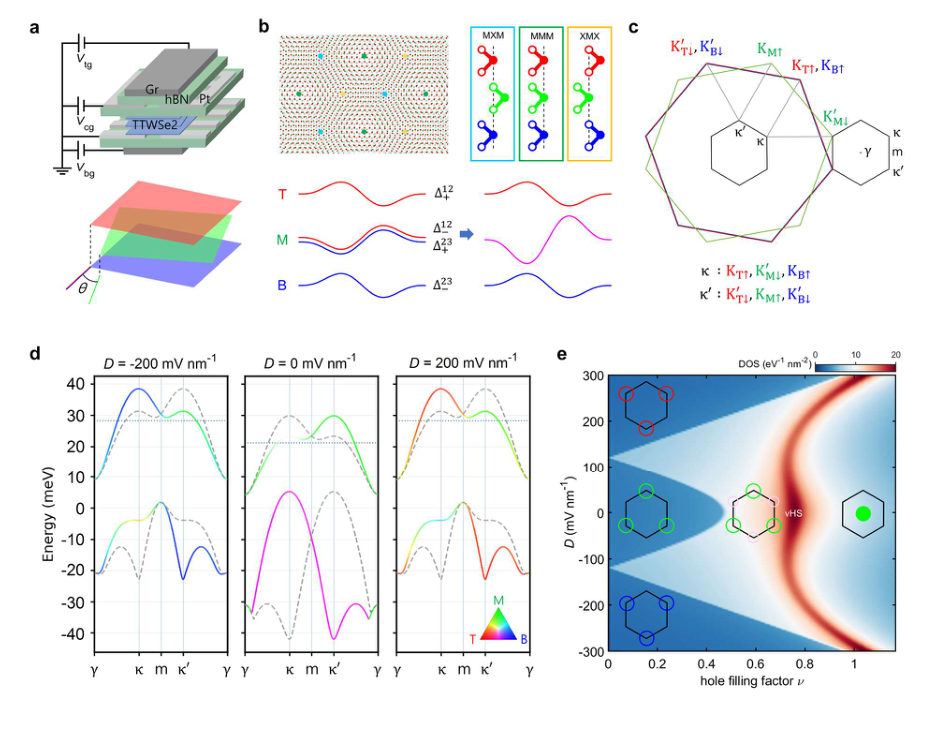
<figcaption class="paper-figure-caption"><b>Fig 1.</b> Fig. 1 | Electronic structure of alternating twisted trilayer WSe₂. a, Schematic illustration of the dual-gated TTWSe2 device and stacking geometry. The top and bottom WSe2 layers are aligned, while the middle layer is rotated by θ. b, Real-space structure of TTWSe2. Coloured dots mark representative local atomic registries, shown at right for the MXM, MMM and XMX configurations (M = W, X = Se). Each interface generates a moiré potential and contributions from each interface combine to produce an approximately doubled moiré modulation at the middle layer (bottom). c, Schematic illustration of momentum- space structure. Large hexagons indicate the Brillouin zone of the top (red), middle...</figcaption>
</figure>
<figure class="paper-figure-card">
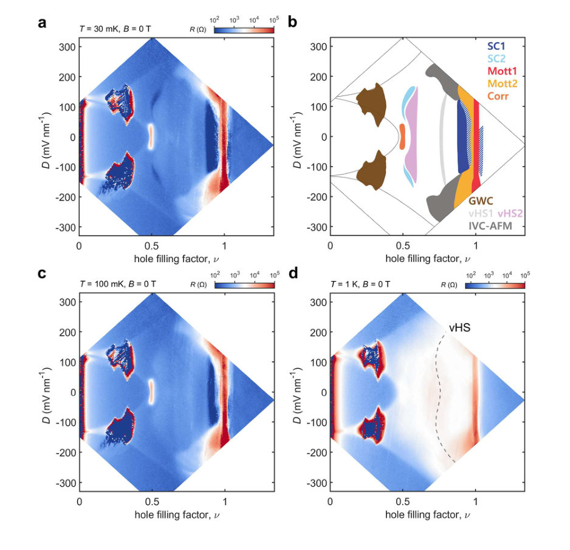
<figcaption class="paper-figure-caption"><b>Fig 2.</b> Fig. 2 | Correlated electronic states. a,c,d, Longitudinal resistance R as a function of hole filling factor ν and vertical displacement field D, measured at B = 0 T and T = 30 mK (a), 100 mK (c), and 1 K (d). b, Schematic phase diagram summarising the correlated states identified in a. Black curves separate the layer-polarised and layer-hybridised regimes. The coloured regions indicate superconducting states (blue; SC1), superconducting-like resistance drops with finite resistance (light blue; SC2), the ν = 1 Mott insulator (red; Mott1), an additional insulator on the electron side of ν = 1 (yellow; Mott2), a weaker correlated insulating state near ν = 1/2 (orange; Corr), generalised...</figcaption>
</figure>
<figure class="paper-figure-card">
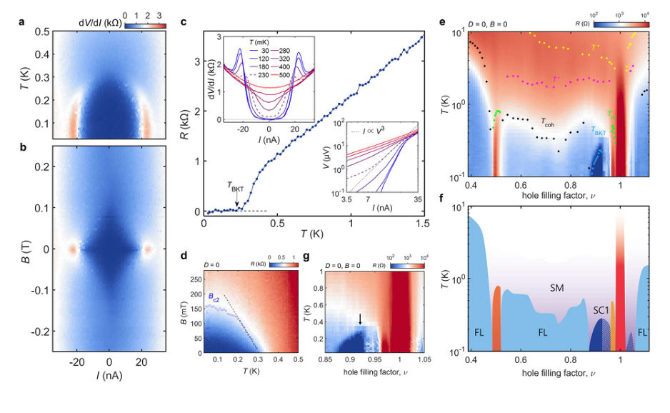
<figcaption class="paper-figure-caption"><b>Fig 3.</b> Fig. 3 | Superconductivity near half moiré filling. a, b, differential resistance dV/dI as a function of dc bias current I and T at B = 0 (a), I and B at T = 30 mK (b). c, Zero-bias resistance R versus T at B = 0 and D = 0. Upper-left inset, representative linecuts from a. Lower-right inset, corresponding I–V curves. The curve at TBKT ≈ 230 mK is shown as a dashed line in both insets. d, Zero-bias resistance as a function of T and B at D = 0. Blue circles mark the upper critical field Bc2, and the dashed line is a Ginzburg-Landau fit of 𝐵ୡଶ(𝑇) =</figcaption>
</figure>
<figure class="paper-figure-card">
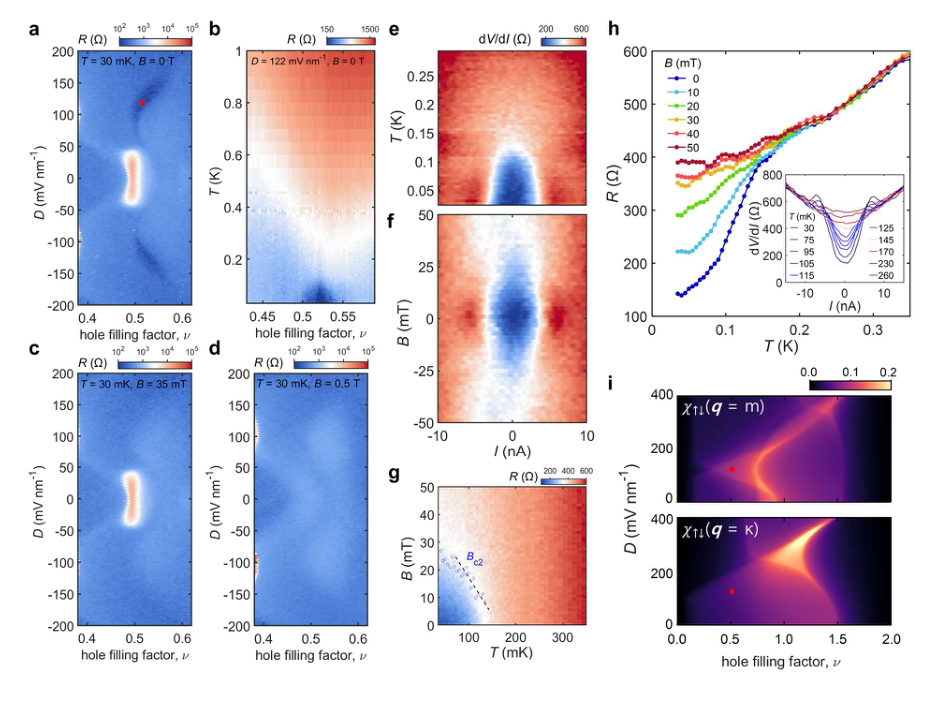
<figcaption class="paper-figure-caption"><b>Fig 4.</b> Fig. 4 | Signatures of superconductivity and correlated phases near quarter filling. a, Zoomed-in view of Fig. 2a near ν = 1/2. The red dot indicates the point at ν = 0.519, D = 122 mV nm-1 where data in e–h were obtained. b, Longitudinal resistance R as a function of ν and T at B = 0 and D = 122 mV nm-1. SC2 forms a dome structure between metallic states. c,d, The same area as in a at B = 35 mT (c) and 0.5 T (d). As B is increased, SC2 and the correlated insulator disappear. e–h, Characterisation of SC2 at D = 122 mV nm-1. e,f, Differential resistance dV/dI as a function of dc bias current I and T at B = 0 (e), I and B at T = 30 mK (f). g, zero- bias resistance as a function of T and B....</figcaption>
</figure>
</div>

<p><strong>Summary.</strong> The paper reports on the discovery and characterization of superconductivity near quarter- and half-filling in twisted trilayer WSe2. By combining transport measurements with continuum theoretical models, the authors map out a complex phase diagram featuring Mott insulators and superconducting domes. This establishes the system as a crucial platform for investigating strongly correlated triangular-lattice Hubbard physics.</p>
<p><strong>Why it may be interesting.</strong> This work provides an experimental realization platform for studying fundamental strongly correlated physics (Hubbard model) in a solid-state moiré system, offering insights into unconventional superconductivity mechanisms driven by electronic correlations.</p>
<details>
<summary>Detailed structure</summary>
<p><strong>Main problem.</strong> The study investigates superconductivity and various correlated insulating phases occurring near quarter- and half-filling in a strongly correlated triangular Hubbard band system.</p>
<p><strong>Main result.</strong> Superconductivity is observed over extended regions of the phase diagram, alongside robust Mott insulators at half-filling and other correlated insulating states at quarter-filling.</p>
<p><strong>Method.</strong> The research combines electrical transport measurements (resistance vs. filling/field) with theoretical continuum model calculations to map out the complex phase diagram.</p>
<p><strong>Model / system.</strong> The physical platform is alternating twisted trilayer WSe2, which realizes a system analogous to the triangular-lattice Hubbard model. The analysis uses continuum $k\cdot p$ frameworks and calculates susceptibilities for weak-coupling instability analysis.</p>
<p><strong>Key observables.</strong> Longitudinal resistance (R), superconducting transition regions ($ ext{SC}1,   ext{SC}2$), Mott insulating states ($    ext{Mott}1,     ext{Mott}2$), and characteristic temperature dependencies ($T_{   ext{coh}}, T'$).</p>
<p><strong>Important parameters / regimes.</strong> Filling factor ($
u$) near $1/4$ and $1/2$, displacement field ($D$), magnetic field ($B$), and the effective on-site interaction ($U$).</p>
<p><strong>Assumptions / limitations.</strong> The analysis relies on continuum descriptions, assuming strong spin-orbit coupling leads to effective spin-valley locking, and uses simplified treatments for parameters like the effective g-factor.</p>
<p><strong>Figures summary.</strong> Figures detail phase diagrams mapping superconducting domes adjacent to insulating states, showing field dependence of superconductivity, and comparing transport measurements against calculated electronic structure features (DOS, Berry curvature).</p>
<p><strong>Paper structure.</strong> The paper systematically maps out a rich phase diagram by performing transport measurements across varying doping ($
u$) and electric fields ($D$), correlating the observed superconducting and insulating regimes with theoretical predictions derived from continuum models of the triangular Hubbard model.</p>
</details>
<details>
<summary>Abstract</summary>
<p>The triangular-lattice Hubbard model is one of the paradigmatic settings for studying correlated electronic systems with geometric frustration that can give rise to a variety of phases. Recently, twisted bilayer TMD systems have emerged as attractive experimental platforms for realising such a model in the moderate-correlation regime. Alternating twisted trilayer TMD systems are expected to realise stronger correlations than bilayer systems owing to their mirror symmetry. Here we report the discovery of superconductivity near quarter- and half-filling, together with various correlated phases, in alternating twisted trilayer WSe2 (TTWSe2). At half filling, a robust correlated insulating state persists over a broad range of displacement fields, signalling the strongly correlated regime. Upon doping, superconductivity emerges over an extended region of the phase diagram. Near quarter filling, another superconducting state appears flanked by correlated metals. Our results establish the TTWSe2 system as a compelling platform for studying strongly correlated triangular-lattice Hubbard physics.</p>
</details>
<p><sub><a href="#top">↑ back to top</a></sub></p>

<p><a id="paper-2606.12262"></a></p>
<h3 id="substrate-insulated-josephson-junctions-for-superconducting-quantum-circuits"><a href="http://arxiv.org/abs/2606.12262v1">Substrate insulated Josephson junctions for superconducting quantum circuits</a></h3>
<p><strong>Authors:</strong> U. Strobel, L. Radtke, L. Kamps, J. N. Voss, J. Lisenfeld, J. Luo-Hofmann, D. Reuter, S. Masis, A. V. Ustinov, H. Rotzinger<br>
<strong>Type:</strong> experiment · <strong>Category:</strong> quantum information and computing · <strong>PDF:</strong> <a href="https://arxiv.org/pdf/2606.12262v1">https://arxiv.org/pdf/2606.12262v1</a><br>
<strong>Analysis basis:</strong> full PDF text, analyzed in chunks
<strong>Topic relevance:</strong> 🔥 <code>QC/QI experiment</code> <strong>4/5</strong></p>
<div class="figure-strip-hint">↔ Scroll figures horizontally</div>
<div class="paper-figures-scroll">
<figure class="paper-figure-card">
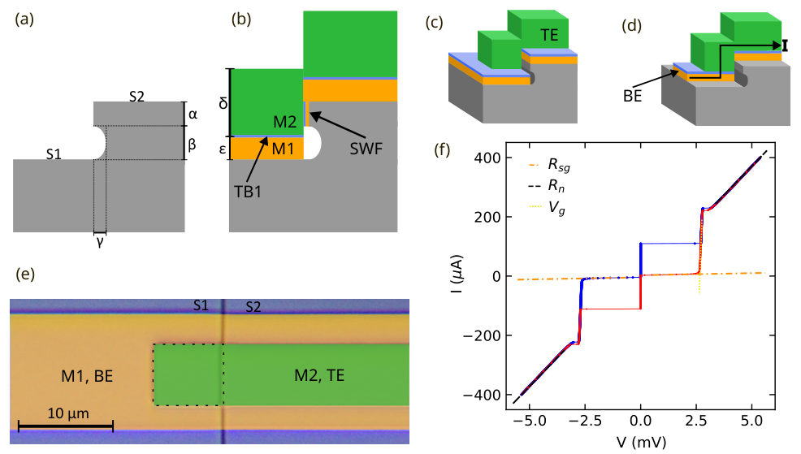
<figcaption class="paper-figure-caption"><b>Fig 1.</b> FIG. 1. Step edge insulated tunnel junction. (a) Substrate cross-section after forming the step with an undercut. (b) Trilayer deposition. To ensure M2 continuity across the step, we require δ &gt; α + β −ϵ. (c) The top electrode (TE) is formed by lithography. (d) The bottom electrode (BE) is formed by lithography. The current direction is shown by the black arrow. (e) False-color optical image of an Nb/AlOx/Nb SEI junction. The junction area is enclosed by the dashed-line rectangle. (f) A typical I-V characterization of a junction with nominal area A = 100 µm2 at 4.2 K indicates an underdamped junction with a linear dissipative branch for bias current above Ic = 110 µA. The return path shows...</figcaption>
</figure>
<figure class="paper-figure-card">
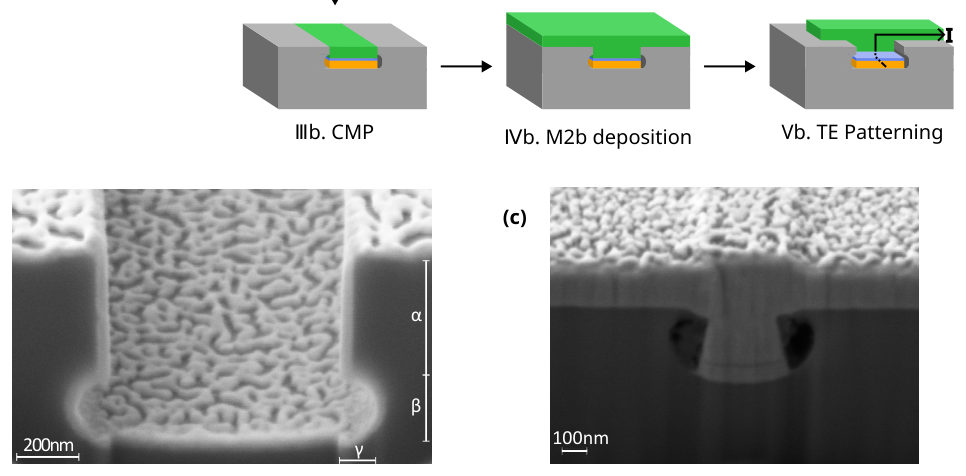
<figcaption class="paper-figure-caption"><b>Fig 2.</b> FIG. 2. (a) cSEI (steps I-II-IIIa-IVa) and p-cSEI (steps I-II-IIIb-IVb-Vb) junctions. (b) Cross-sectional scanning electron microscope (SEM) image of a trench, taken at 55◦tilt after a 4 nm Au sputter and a focused ion beam (FIB) cut. The 800 nm wide trench is etched into a silicon substrate using the Bosch undercut process. The undercut dimensions are in good agreement with the design parameters of α = 450 nm, β = 250 nm and γ = 100 nm. (c) p-cSEI Nb/AlOx/Nb/Nb junction cross-sectional SEM image.</figcaption>
</figure>
<figure class="paper-figure-card">
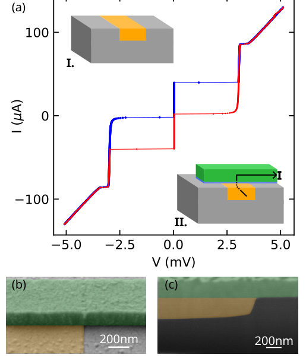
<figcaption class="paper-figure-caption"><b>Fig 3.</b> FIG. 4. (a) I–V characteristic of an Nb cT junction with A = 16µm2 at 50 mK. Inset I. Sample state after (1) no- undercut trench etch (γ ≤0), (2) M1 deposition (ϵ &gt; α + β), and (3) planarization. BE is formed in the trench. Inset II Sample state after (4) hydrofluric acid dip and ion-mill cleaning to remove the native oxide, (5) TB1 and M2 depo- sition, (6) TE patterning, and (7) TB1 patterning (optional, possibly with the same mask as the previous step).(b) False- color SEM image of Nb cT junction(c) Cross-sectional SEM image</figcaption>
</figure>
<figure class="paper-figure-card">
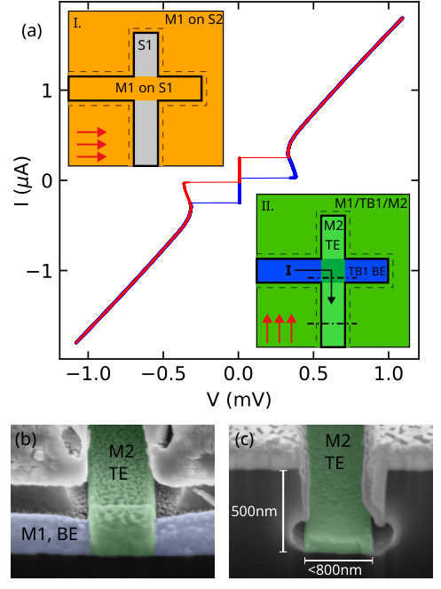
<figcaption class="paper-figure-caption"><b>Fig 4.</b> FIG. 3. (a) I-V characterization of an Al/AlOx/Al pla- narized Manhattan Trench junction with area A = 0.25µm2</figcaption>
</figure>
<figure class="paper-figure-card">
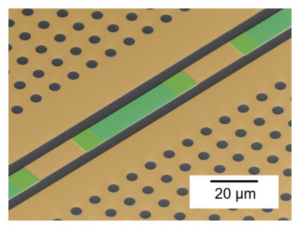
<figcaption class="paper-figure-caption"><b>Fig 5.</b> FIG. 5. False-color SEM image of a two-layer niobium CPW resonator structure. Niobium embedded in the substrate is shown in orange, and the second niobium layer in green.</figcaption>
</figure>
</div>

<p><strong>Summary.</strong> This paper presents a breakthrough fabrication technique for Josephson junctions by utilizing substrate profiling instead of traditional organic resists. This method yields high-quality, oxide-free junctions suitable for advanced superconducting quantum circuits. The results demonstrate improved junction performance and scalability across various complex geometries.</p>
<p><strong>Why it may be interesting.</strong> This work directly addresses hardware limitations in superconducting qubits by improving junction quality and scalability through novel material engineering techniques, which is central to quantum computing architectures.</p>
<details>
<summary>Detailed structure</summary>
<p><strong>Main problem.</strong> The primary challenge is developing fabrication techniques for Josephson junctions (JJs) that avoid intentionally introduced oxides or organic residues, which are major sources of decoherence in superconducting quantum circuits.</p>
<p><strong>Main result.</strong> The authors successfully demonstrated substrate profiling methods to create high-quality, oxide-free JJs using various geometries (SEI, MT, cT), enabling operation at higher speeds and temperatures.</p>
<p><strong>Method.</strong> The core method involves etching patterned trenches into the substrate material itself to define the junction barrier and electrodes, circumventing traditional resist-based lithography steps.</p>
<p><strong>Model / system.</strong> The platform is superconducting quantum circuits utilizing Josephson junctions (e.g., Nb/AlOx/Nb). The geometry is defined by creating specific step profiles on the substrate rather than relying on deposited insulating layers or organic resists.</p>
<p><strong>Key observables.</strong> I-V characterization curves showing pronounced hysteresis, extracted gap voltage ($2.78 	ext{ mV}$), critical current density ($J_c$), and microwave resonator quality factor ($Q > 3 	imes 10^5$).</p>
<p><strong>Important parameters / regimes.</strong> Operating temperatures (e.g., $4.2 	ext{ K}$), junction sizes, and the ratio of edge leakage to normal resistance ($R_{sg}/R_n$).</p>
<p><strong>Assumptions / limitations.</strong> The analysis often requires correcting simple approximations for small junctions using complex fitting procedures involving effective temperature ($\Theta_{	ext{eff}}$) or deposition parameters ($p \cdot t$).</p>
<p><strong>Figures summary.</strong> Figures illustrate cross-sections and I-V curves for various junction types (SEI, cSEI, MT), alongside plots showing $J_c$ dependence on processing time/pressure and resonator performance.</p>
<p><strong>Paper structure.</strong> The paper progresses by introducing the limitations of current JJ fabrication, detailing several novel substrate profiling geometries (SEI, MT, etc.), presenting characterization results via I-V curves and microwave measurements, and finally analyzing the derived junction parameters ($J_c$, leakage ratios) across different structures.</p>
</details>
<details>
<summary>Abstract</summary>
<p>We have developed a fabrication technique for Josephson junctions that employs a three-dimensional patterned, low-loss substrate instead of commonly used organic resists. The technique enables the fabrication of high-quality trilayer junctions from a wide range of geometries and materials, including high-melting-point superconductors such as tantalum or niobium. The junction electrodes are free from intentionally introduced oxides and organic materials, which are known sources of decoherence. We fabricate and characterize underdamped Nb/AlOx/Nb junctions of different sizes in several geometries. Such junctions enable manufacturing of quantum circuits operating at higher speeds and elevated temperatures.</p>
</details>
<p><sub><a href="#top">↑ back to top</a></sub></p>

<p><a id="paper-2606.11912"></a></p>
<h3 id="robust-spin-logic-enabled-by-generalized-math1122math-symmetry-in-math1123math-wave-magnets"><a href="http://arxiv.org/abs/2606.11912v1">Robust Spin Logic Enabled by Generalized $\mathrm{SU}(2)$ Symmetry in $p$-Wave Magnets</a></h3>
<p><strong>Authors:</strong> Hao-Kun Ke, Gong Zhao, Siqing Li, Ruixiang Chen, Chui-Zhen Chen<br>
<strong>Type:</strong> theory · <strong>Category:</strong> other · <strong>PDF:</strong> <a href="https://arxiv.org/pdf/2606.11912v1">https://arxiv.org/pdf/2606.11912v1</a><br>
<strong>Analysis basis:</strong> full PDF text, analyzed in chunks
<strong>Topic relevance:</strong> <code>driven-dissipative phase transition</code> <strong>3/5</strong> · <code>exotic spin models in light-matter</code> <strong>3/5</strong> · <code>non-equilibrium dynamics</code> <strong>3/5</strong> · <code>methods for driven-dissipative</code> <strong>2/5</strong> · <code>non-equilibrium universality</code> <strong>2/5</strong> · <code>spintronics-quantum-optics interface</code> <strong>2/5</strong> · <code>Keldysh / 2PI / non-Gaussian methods</code> <strong>1/5</strong> · <code>Kondo &amp; dissipative impurity</code> <strong>1/5</strong> · <code>analog quantum simulation</code> <strong>1/5</strong> · <code>correlated / nonlocal dissipation</code> <strong>1/5</strong></p>
<div class="figure-strip-hint">↔ Scroll figures horizontally</div>
<div class="paper-figures-scroll">
<figure class="paper-figure-card">
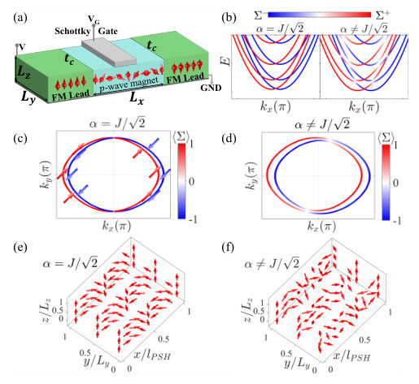
<figcaption class="paper-figure-caption"><b>Fig 1.</b> FIG. 1. (a) Schematic of the synergistic p-wave magnetic spin-FET. A longitudinal bias V drives the charge trans- port, while a gate voltage VG tunes the induced Rashba SOC (α) to actively compensate the intrinsic momentum- dependent exchange (J), controlling transport between fer- romagnetic leads. (b) Quasi-1D ribbon band dispersions showing perfect spin-momentum decoupling in the general- ized SU(2) symmetric regime (α = J/ √</figcaption>
</figure>
<figure class="paper-figure-card">
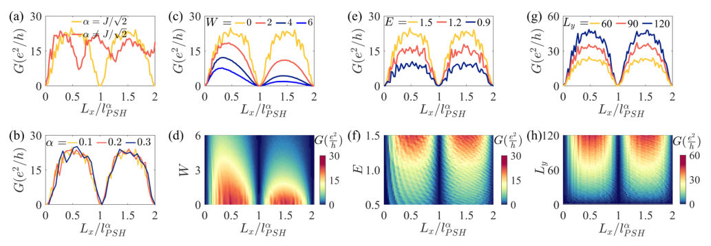
<figcaption class="paper-figure-caption"><b>Fig 2.</b> FIG. 2. Symmetry-protected macroscopic conductance oscillations. (a,b) Ballistic conductance G vs. normalized channel length Lx/lα PSH, demonstrating strict inverse scaling with the gate-controlled Rashba SOC α. (c,d) G under varying non- magnetic Anderson disorder W (100-sample ensemble average), confirming the exceptional immunization of spin coherence against momentum scattering even in strongly disordered regimes. (e,f) Stability of G oscillations against incident Fermi energy E variations. (g,h) Conductance scaling with transverse width Ly; the invariant spatial period confirms the effectively 1D nature of the protected PSH mode. Fixed parameters: m = 0.5, hz = −1.5, J = 0.1 √</figcaption>
</figure>
<figure class="paper-figure-card">
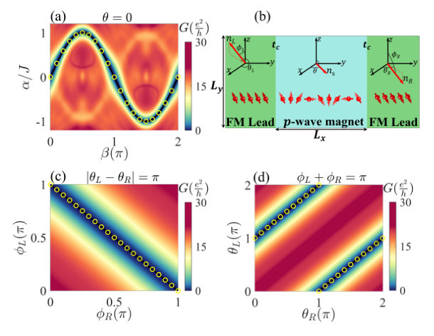
<figcaption class="paper-figure-caption"><b>Fig 3.</b> FIG. 3. Transport phase diagrams and stringent boundary conditions for symmetry-protected spin logic. (a) Map of G in the (α/J, β) space for injected spin azimuth θ = 0. The generalized SU(2) compensation manifests as a distinct G = 0 contour. (b) Parameterization of terminal N´eel vectors nL/R via polar (θL/R) and azimuthal (ϕL/R) angles. A perfect minimum (infinite ON/OFF ratio) strictly requires antiparallel polarizer and analyzer alignments. (c,d) Conductance maps navigating the FM N´eel angles: (c) enforcing |θL −θR| = π, and (d) locking ϕL + ϕR = π. Solid black curves indicate actively protected G = 0 regions, flawlessly matching analytical resonance conditions (open circles). We set...</figcaption>
</figure>
<figure class="paper-figure-card">
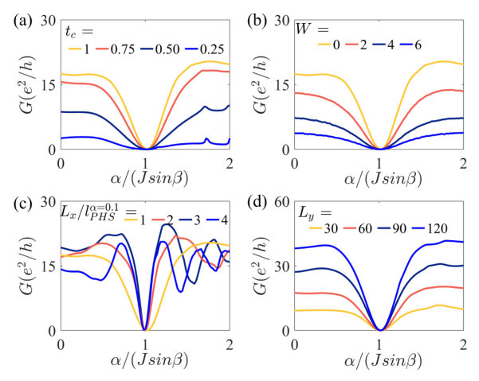
<figcaption class="paper-figure-caption"><b>Fig 4.</b> FIG. 4. Universal stability of synergistic switching operations. The macroscopic switching profile drops precipitously to an exact OFF-state at the critical compensation α/(J sin β) = 1. This behavior is highly robust against diverse perturbations: (a) varying FM-channel interfacial coupling tc, demonstrating immunity to contact scattering; (b) increasing non-magnetic Anderson disorder W (100-sample average), highlighting the insulation of spin coherence by the generalized SU(2) symmetry; (c) normalized channel length Lx/lα PSH, showing the deep OFF-state requires only commensurability with the PSH period; and (d) transverse width Ly, confirming full geometric scalability. Fixed parameters:...</figcaption>
</figure>
</div>

<p><strong>Summary.</strong> The paper addresses the challenge of maintaining spin coherence in advanced magnetic materials by proposing an active compensation scheme. By tuning gate-induced Rashba SOC to exactly balance the material's intrinsic $p$-wave exchange coupling, the authors restore a generalized SU(2) symmetry. This engineered protection yields robust, electrically tunable Persistent Spin Helix states suitable for high-contrast spintronic switching.</p>
<p><strong>Why it may be interesting.</strong> This work provides a concrete mechanism for engineering topological protection (via symmetry) into solid-state spintronics devices, offering a pathway to robust quantum control elements that are tunable electrically.</p>
<details>
<summary>Detailed structure</summary>
<p><strong>Main problem.</strong> The challenge is realizing functional spin-logic devices using unconventional magnets while maintaining long-range spin coherence against scattering and dephasing.</p>
<p><strong>Main result.</strong> By engineering a generalized SU(2) symmetry through the active compensation of intrinsic exchange coupling with gate-tunable Rashba SOC, the authors demonstrate robust, electrically tunable spintronic switching.</p>
<p><strong>Method.</strong> The work uses continuum Hamiltonian modeling combined with Non-Equilibrium Green's Function (NEGF) transport simulations to analyze spin dynamics and conductance.</p>
<p><strong>Model / system.</strong> The system is a 3D p-wave magnet modeled as a spin-FET, described by a Hamiltonian combining $p$-wave exchange ($H_M$) and gate-induced Rashba SOC ($H_{SOC}$).</p>
<p><strong>Key observables.</strong> High-visibility Datta-Das conductance oscillations (transport) and the spatially evolving local spin expectation value $\langleoldsymbol{\sigma}(\mathbf{r})
angle$ (spin texture).</p>
<p><strong>Important parameters / regimes.</strong> The critical resonance condition is $\alpha = J \sin(eta - 	heta)$, which tunes the system into a symmetry-protected Persistent Spin Helix (PSH) regime.</p>
<p><strong>Assumptions / limitations.</strong> The analysis assumes that the spin quantization axis can be constrained to the 2D plane for simplicity in modeling the compensation mechanism.</p>
<p><strong>Figures summary.</strong> Figures illustrate the comparison of spin texture when the system is at resonance versus detuned, and map out the parameter space $(\alpha/J, eta)$ showing the boundary condition required for zero conductance (OFF-state).</p>
<p><strong>Paper structure.</strong> The paper progresses from identifying the coherence challenge in 3D magnets to proposing active symmetry restoration via SOC compensation. It analyzes the resulting PSH state and culminates by demonstrating its use in a high-contrast, disorder-resilient spin-FET switch.</p>
</details>
<details>
<summary>Abstract</summary>
<p>Unconventional magnets combine the vanishing stray fields of antiferromagnets with the strong spin-splitting of ferromagnets, offering a unique material platform for spintronics. However, a critical challenge in realizing functional spin-logic devices lies in preserving long-range spin coherence against momentum-degrading scattering and gate-induced dephasing. Here, we demonstrate that the intrinsic momentum-dependent exchange field of a three-dimensional $p$-wave magnet can be precisely tuned against gate-induced Rashba spin-orbit coupling to establish a \textit{generalized} $\mathrm{SU}(2)$ spin-rotation symmetry. This emergent conservation law generates a symmetry-protected Persistent Spin Helix (PSH), effectively integrating the high energy scales of 3D bulk magnetic exchange with the macroscopic coherence of symmetry protection. By modeling a synergistic $p$-wave magnetic spin field-effect transistor (spin-FET), we reveal high-visibility Datta-Das conductance oscillations controlled purely by electrical gating. Crucially, our quantum transport simulations confirm that this symmetry-engineered transport regime exhibits exceptional resilience against strong non-magnetic Anderson disorder and geometric variations. These results establish a synergistic paradigm for non-magnetized spintronics, demonstrating how the active integration of spin-orbit coupling and unconventional magnetism can yield disorder-resilient spintronic logic.</p>
</details>
<p><sub><a href="#top">↑ back to top</a></sub></p>

<p><a id="paper-2606.12043"></a></p>
<h3 id="pearl-supratransmission-in-a-boundary-driven-two-dimensional-nonlinear-schrodinger-equation-with-a-hole"><a href="http://arxiv.org/abs/2606.12043v1">Pearl supratransmission in a boundary-driven two-dimensional nonlinear Schrödinger equation with a hole</a></h3>
<p><strong>Authors:</strong> Rudy Kusdiantara, Hadi Susanto<br>
<strong>Type:</strong> theory · <strong>Category:</strong> other · <strong>PDF:</strong> <a href="https://arxiv.org/pdf/2606.12043v1">https://arxiv.org/pdf/2606.12043v1</a><br>
<strong>Analysis basis:</strong> full PDF text, analyzed in chunks
<strong>Topic relevance:</strong> <code>driven-dissipative phase transition</code> <strong>3/5</strong> · <code>methods for driven-dissipative</code> <strong>3/5</strong> · <code>non-equilibrium dynamics</code> <strong>3/5</strong> · <code>non-equilibrium universality</code> <strong>2/5</strong> · <code>Frenkel-Kontorova</code> <strong>1/5</strong> · <code>Keldysh / 2PI / non-Gaussian methods</code> <strong>1/5</strong> · <code>analog quantum simulation</code> <strong>1/5</strong> · <code>correlated / nonlocal dissipation</code> <strong>1/5</strong> · <code>interference shaping light</code> <strong>1/5</strong></p>
<div class="figure-strip-hint">↔ Scroll figures horizontally</div>
<div class="paper-figures-scroll">
<figure class="paper-figure-card">
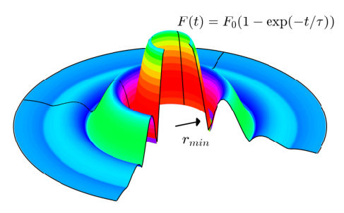
<figcaption class="paper-figure-caption"><b>Fig 1.</b> Fig. 1: Schematic of the annular geometry used for the driven (2+1)-dimensional nonlinear Schr¨odinger equation. Harmonic forcing with azimuthal phase eimθ</figcaption>
</figure>
<figure class="paper-figure-card">
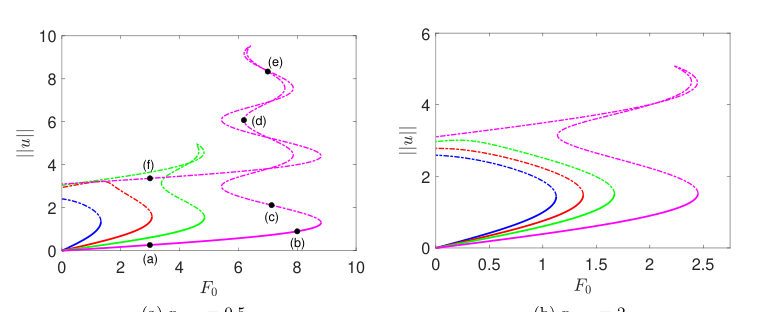
<figcaption class="paper-figure-caption"><b>Fig 2.</b> Fig. 2: Bifurcation diagrams for standing waves of Eq. (6) in the cubic case (s = 0), showing the norm as a function of the driving amplitude F0 for azimuthal indices m = 0, 2, 3, 5 (blue, red, green, and magenta, respectively). Solid (thick) segments indicate stable branches and dashed–dotted (thin) segments unstable ones. Panels (a) and (b) correspond to rmin = 0.5 and rmin = 2, respectively.</figcaption>
</figure>
<figure class="paper-figure-card">
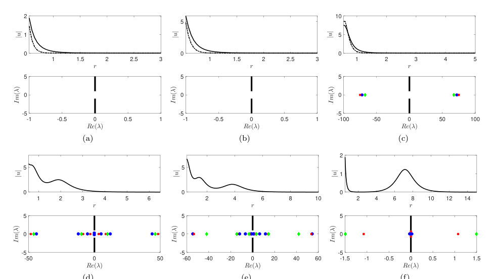
<figcaption class="paper-figure-caption"><b>Fig 3.</b> Fig. 3: Selected standing-wave profiles from the bifurcation diagram in Fig. 2a and their corresponding point spectra in the complex plane. The solid curves in the profile plots represent numerical solutions. The dash-dotted curves in panels (a)–(c) show the variational approximation obtained from the ansatz introduced in Eq. (12). Symbols in the spectral plots denote azimuthal perturbation modes: q = 0 (blue dots), q = 1 (red crosses), and q = 2 (green diamonds). Profiles whose spectra lie entirely on the imaginary axis are spectrally stable, whereas eigenvalues with Re, λ ̸= 0 indicate instability.</figcaption>
</figure>
<figure class="paper-figure-card">
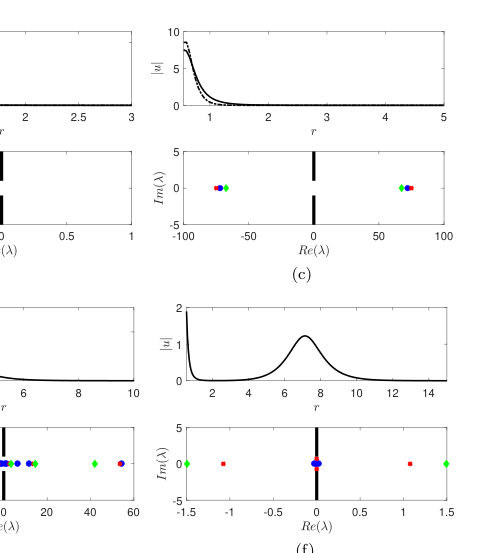
<figcaption class="paper-figure-caption"><b>Fig 4.</b> Figure 4 compares the bifurcation structure for m = 5 in the cubic–quintic and saturable models. In the cubic– quintic case, the branches display sharp turning points and a pronounced dependence on the driving amplitude F0, reflecting the competition between the focusing cubic and defocusing quintic terms. The critical value of the</figcaption>
</figure>
<figure class="paper-figure-card">
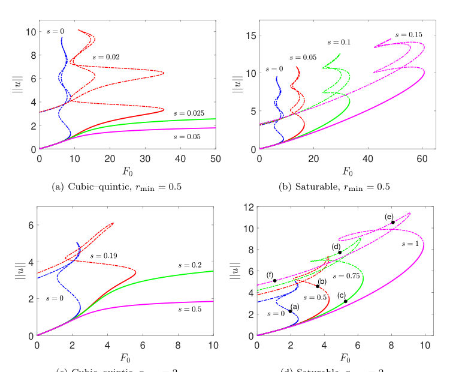
<figcaption class="paper-figure-caption"><b>Fig 5.</b> Fig. 4: Bifurcation diagrams for m = 5 comparing the cubic–quintic and saturable nonlinearities at rmin = 0.5 and rmin = 2 with different values of s.</figcaption>
</figure>
</div>

<p><strong>Summary.</strong> The paper quantitatively investigates supratransmission in a 2D NLS model confined to an annular region with a central hole. By analyzing the system's spectral properties and performing time-domain simulations, the authors show that energy can leak through forbidden bands or exhibit nonlinear transitions even when linear propagation is allowed. The key finding is that nonzero angular momentum ($m$) drives symmetry breaking, resulting in the emission of discrete localized structures called 'pearls'.</p>
<p><strong>Why it may be interesting.</strong> This work is highly relevant to theoretical physicists working on open quantum systems or quantum optics because it models energy transport phenomena in structured media where linear wave propagation is forbidden, requiring nonlinear mechanisms for energy leakage. The concept of 'pearls' suggests discrete excitation dynamics within a continuous field.</p>
<details>
<summary>Detailed structure</summary>
<p><strong>Main problem.</strong> The study investigates energy supratransmission—the transport of energy through a frequency band where linear waves are evanescent—in a two-dimensional nonlinear Schrödinger equation (NLS) defined on an annular geometry with a central hole.</p>
<p><strong>Main result.</strong> Supratransmission is demonstrated both in the forbidden gap regime and, analogously, in the allowed spectral band via nonlinear effects. The presence of azimuthal charge ($m 
eq 0$) triggers symmetry breaking, leading to the emission of localized excitations called 'pearls'.</p>
<p><strong>Method.</strong> The research employs a combination of analytical techniques (variational approximation) for standing wave analysis and advanced numerical methods (pseudo-arclength continuation, Crank-Nicolson scheme with TBC) for time evolution simulations.</p>
<p><strong>Model / system.</strong> The system is governed by the 2D NLS equation on an annulus ($r \in [r_{	ext{min}}, r_{	ext{max}}]$). Nonlinearities studied include cubic–quintic and saturable forms, and the driving mechanism involves harmonic forcing at the inner boundary.</p>
<p><strong>Key observables.</strong> Critical driving amplitude for supratransmission ($F_{0C}$), spectral stability ($ ext{Re}(\lambda)=0$), localized pulse emission ('pearls'), and spatiotemporal evolution of wave profiles.</p>
<p><strong>Important parameters / regimes.</strong> Inner radius ($r_{	ext{min}}$), azimuthal index ($m$), nonlinear coefficients ($s$), and driving frequency ($\Omega$).</p>
<p><strong>Assumptions / limitations.</strong> The analysis relies on approximations such as the variational method for threshold determination, and numerical simulations require absorbing boundary conditions (TBC) at outer boundaries.</p>
<p><strong>Figures summary.</strong> Figures illustrate bifurcation diagrams showing stable/unstable branches versus drive amplitude, time evolution snapshots showing ring formation and outward propagation of localized 'pearls', and isosurface plots visualizing radial and angular excursions.</p>
<p><strong>Paper structure.</strong> The paper progresses from establishing the linear band structure to analyzing standing wave stability via eigenvalue problems. It then details numerical simulations in both the forbidden gap (supratransmission) and the allowed band, culminating in a variational analysis linking critical drive amplitude to geometric parameters.</p>
</details>
<details>
<summary>Abstract</summary>
<p>We investigate energy supratransmission in a boundary-driven two-dimensional nonlinear Schrödinger equation with a central hole. Harmonic forcing with azimuthal modulation generates standing-wave states whose existence and stability depend on the driving amplitude, the inner radius, and the imposed azimuthal charge. Bifurcation analysis shows that small inner radii produce strongly confined states with higher destabilization thresholds, whereas larger radii yield broader profiles and smoother transitions between stable and unstable branches. The cubic--quintic and saturable models exhibit similar qualitative behaviour but differ quantitatively in their critical amplitudes and parameter dependence. A variational approximation captures the dependence of the critical drive on the azimuthal charge and nonlinear parameters, and clarifies how the nonlinear response shapes the stationary states near the turning point. Time-dependent simulations show that supratransmission occurs through the emission of localized pulses, with nonzero azimuthal charge triggering symmetry breaking and producing two-dimensional localized excitations (pearls). Isosurface plots provide a complementary view of the resulting radial and angular excursions. These results establish a quantitative framework for supratransmission in two-dimensional geometries and are relevant to driven nonlinear systems in optics, Bose--Einstein condensates, and structured media.</p>
</details>
<p><sub><a href="#top">↑ back to top</a></sub></p>

<p><a id="paper-2606.11317"></a></p>
<h3 id="lectures-on-semiclassical-methods-for-composite-operators"><a href="http://arxiv.org/abs/2606.11317v1">Lectures on Semiclassical Methods for Composite Operators</a></h3>
<p><strong>Authors:</strong> Francesco Sannino<br>
<strong>Type:</strong> theory · <strong>Category:</strong> statistical mechanics · <strong>PDF:</strong> <a href="https://arxiv.org/pdf/2606.11317v1">https://arxiv.org/pdf/2606.11317v1</a><br>
<strong>Analysis basis:</strong> full PDF text, analyzed in chunks
<strong>Topic relevance:</strong> <code>Keldysh / 2PI / non-Gaussian methods</code> <strong>3/5</strong> · <code>non-equilibrium dynamics</code> <strong>2/5</strong> · <code>driven-dissipative phase transition</code> <strong>1/5</strong> · <code>methods for driven-dissipative</code> <strong>1/5</strong> · <code>non-equilibrium universality</code> <strong>1/5</strong></p>
<div class="figure-strip-hint">↔ Scroll figures horizontally</div>
<div class="paper-figures-scroll">
<figure class="paper-figure-card">
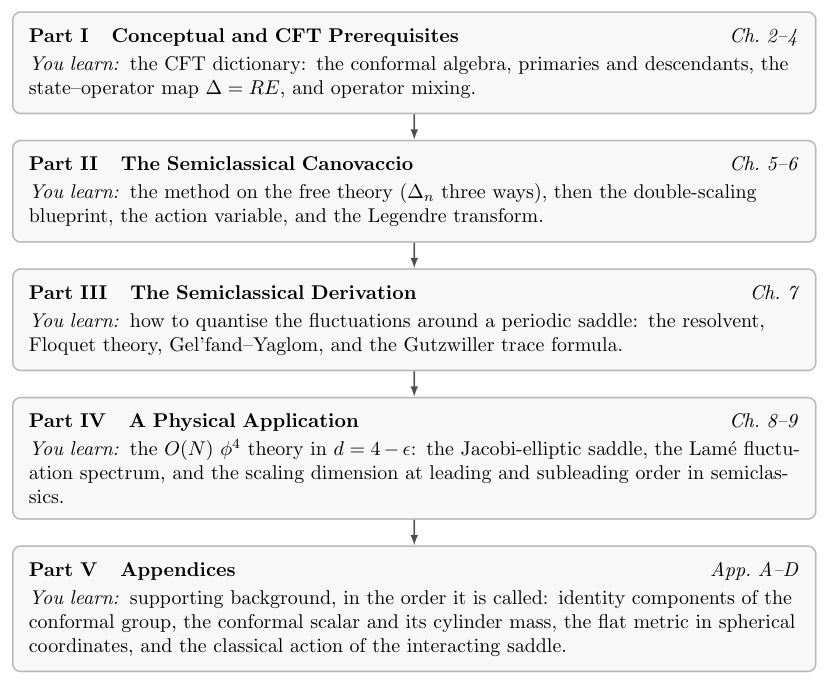
<figcaption class="paper-figure-caption"><b>Fig 1.</b> Figure 1.1: The five parts of these notes and what each delivers. Parts I–II build the language and the method, Part III carries out the semiclassical derivation, Part IV applies it to a concrete theory and closes with the Conclusions, and Part V provides the supporting appendices.</figcaption>
</figure>
<figure class="paper-figure-card">
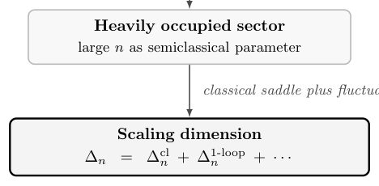
<figcaption class="paper-figure-caption"><b>Fig 2.</b> Figure 1.2: The logical spine of these notes: from a critical system to the scaling dimension of a heavy composite operator. Each step is the subject of a later chapter.</figcaption>
</figure>
<figure class="paper-figure-card">
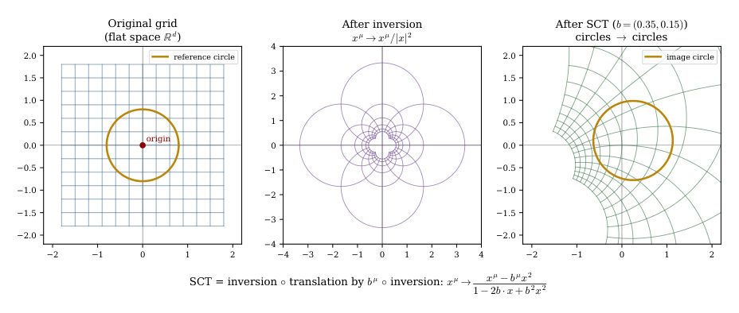
<figcaption class="paper-figure-caption"><b>Fig 3.</b> Figure 2.1: Special conformal transformation as inversion–translation–inversion. Left: A regular Cartesian grid in flat space. Centre: After the inversion xµ 7→xµ/|x|2; straight lines not passing through the origin are mapped to circles passing through the origin. Right: The full special conformal transformation with parameter b = (0.35, 0.15). The reference circle is mapped to another circle, illustrating that conformal transformations preserve angles and map generalized circles (lines or circles) to generalized circles, while not preserving lengths or centres. Infinitesimally, this inversion–translation–inversion composition generates the vector field ϵµ = bµx2 −2(b · x)xµ, associated...</figcaption>
</figure>
<figure class="paper-figure-card">
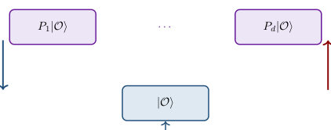
<figcaption class="paper-figure-caption"><b>Fig 4.</b> Figure 2.2: The conformal multiplet. Starting from a primary state |O⟩(bottom, blue) satisfying Kµ|O⟩= 0, repeated action of the momentum operator Pµ (red arrows, upward) generates descendants at dimensions ∆, ∆+ 1, ∆+ 2, . . . The number of independent states at level n equals the number of symmetric tensors of rank n, namely d+n−1 n  . The special- conformal generator Kµ (blue arrow, downward) lowers the dimension; its vanishing on |O⟩ defines the primary as the lowest-weight state of the representation. In the state–operator correspondence each node is a local operator; the levels are the scaling dimensions measured on the cylinder.</figcaption>
</figure>
<figure class="paper-figure-card">
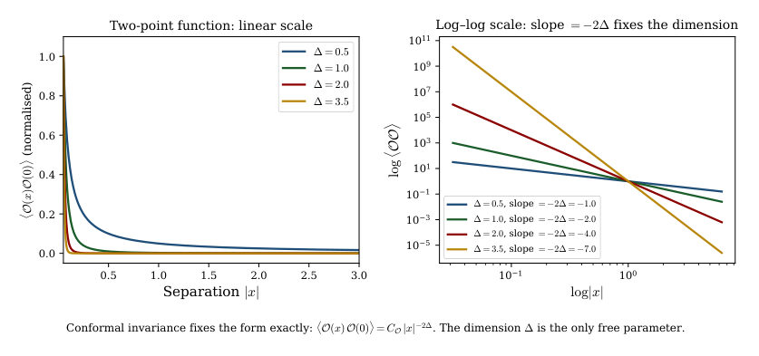
<figcaption class="paper-figure-caption"><b>Fig 5.</b> Figure 2.3: The two-point function fixes the scaling dimension. Conformal invariance uniquely determines ⟨O(x) O(0)⟩= CO |x|−2∆; the only free parameter is the dimension ∆. Left: Linear scale for ∆= 0.5, 1, 2, 3.5; higher dimensions decay faster. Right: Log–log scale, where the relation becomes a straight line with slope −2∆. Measuring the slope of the two- point function in a log–log plot is therefore the direct numerical route to extracting scaling dimensions.</figcaption>
</figure>
</div>

<p><strong>Summary.</strong> This lecture series details a powerful, systematic method for calculating the scaling dimensions of composite operators in Conformal Field Theories. It bridges abstract CFT concepts with concrete semiclassical mechanics by mapping the problem onto finding the energy levels of a state on a cylinder geometry. The resulting framework is crucial for understanding universal properties near critical points.</p>
<p><strong>Why it may be interesting.</strong> The deep connection between CFT/RG flow and semiclassical quantization techniques is highly relevant. The use of spectral methods (like those derived from Floquet theory) to calculate quantum corrections around classical solutions mirrors approaches used in analyzing stability in many-body systems or quasi-periodic potentials.</p>
<details>
<summary>Detailed structure</summary>
<p><strong>Main problem.</strong> The primary goal is to provide a coherent introduction to Conformal Field Theory (CFT) by developing a systematic semiclassical framework for calculating the scaling dimensions of composite operators, particularly $\phi^n$. This addresses gaps in literature regarding how these complex operators probe collective sectors.</p>
<p><strong>Main result.</strong> The notes establish a rigorous connection between the state-operator correspondence on the cylinder and the energy spectrum of the theory, allowing for the calculation of anomalous dimensions via semiclassical quantization techniques. The framework is successfully applied to $O(N) \phi^4$ theory in $d=4-\epsilon$.</p>
<p><strong>Method.</strong> The core methodology involves mapping the quantum problem onto a classical dynamics problem on the cylinder ($\mathbb{R} 	imes S^{d-1}$), utilizing semiclassical approximations like WKB, Bohr-Sommerfeld quantization, and advanced tools such as Floquet theory and the Gutzwiller trace formula.</p>
<p><strong>Model / system.</strong> The general context is Quantum Field Theory in critical regimes described by CFT. Specific models include free scalar theories (used for initial development) and the $O(N) \phi^4$ model at its Wilson-Fisher fixed point, which exhibits universal critical behavior.</p>
<p><strong>Key observables.</strong> Scaling dimensions ($\Delta_n$) of composite operators $\phi^n$, energy levels on the cylinder, and one-loop corrections to these dimensions.</p>
<p><strong>Important parameters / regimes.</strong> The large occupation number ($n$ or $N$), the spacetime dimension $d=4-\epsilon$, and the coupling constants defining the fixed point.</p>
<p><strong>Assumptions / limitations.</strong> The semiclassical approach assumes that for heavy operators (large $n$), the system's dynamics are dominated by a classical periodic solution, allowing quantum corrections to be treated perturbatively via fluctuation determinants.</p>
<p><strong>Figures summary.</strong> Figures illustrate the logical descent from a critical system to the scaling dimension ($\Delta_n = \Delta_{cl} + \Delta_{1-loop}/n + \dots$) and summarize the five parts of the lecture notes, detailing the mathematical machinery used at each stage.</p>
<p><strong>Paper structure.</strong> The structure is highly pedagogical: Part I reviews CFT basics (conformal group, state-operator map); Part II builds the semiclassical framework using free theory; Part III develops general tools (Floquet theory, Gutzwiller formula) for periodic saddles; Part IV applies this machinery to $O(N) \phi^4$ theory; and subsequent sections provide appendices on related mathematical structures.</p>
</details>
<details>
<summary>Abstract</summary>
<p>These lecture notes are intended as a coherent introduction to conformal field theory in general, and composite operators in particular, through a semiclassical framework for computing scaling dimensions, with emphasis on operators of the form $φ^n$. In doing so, they aim to fill a gap in the literature and to help decode some of the relevant concepts. The physical idea is that at large $n$ an (heavy) operator creates a highly occupied state. Through the state-operator correspondence, this state lives on the cylinder $\mathbb{R}\times S^{d-1}$, and its scaling dimension is the corresponding energy of the theory on the cylinder. The notes are organized as a self-contained route from conformal symmetry to semiclassical dynamics. Part I reviews the conformal group, primary operators, radial quantization, the state-operator correspondence, and operator mixing. Part II builds the semiclassical framework, first in the free scalar theory, where the dimension of $φ^n$ is recovered in three independent ways, and then through the double-scaling limit, the action variable, and Bohr-Sommerfeld quantization. Part III develops the general machinery of periodic saddles, Floquet theory, fluctuation determinants, the Gel'fand-Yaglom method, and the Gutzwiller trace formula. Part IV applies the framework to the $O(N)$ $φ^4$ theory in $d=4-ε$ at the Wilson-Fisher fixed point, deriving the classical elliptic solution, the Lamé fluctuation spectrum, the zero modes, and the one-loop contribution to the large-$n$ scaling dimensions. Beyond the explicit computation, the notes emphasize the role of composite operators as probes of collective sectors of quantum field theory, with extensions to gauge theories, conformal windows, and asymptotically safe field theories.</p>
</details>
<p><sub><a href="#top">↑ back to top</a></sub></p>

<p><a id="paper-2606.11481"></a></p>
<h3 id="synthetic-altermagnetism-beyond-the-crystal-limit"><a href="http://arxiv.org/abs/2606.11481v1">Synthetic Altermagnetism Beyond the Crystal Limit</a></h3>
<p><strong>Authors:</strong> Rodolfo A. Gallardo, Andrea M. León, Jürgen Lindner, Jhon W. González<br>
<strong>Type:</strong> theory · <strong>Category:</strong> other · <strong>PDF:</strong> <a href="https://arxiv.org/pdf/2606.11481v1">https://arxiv.org/pdf/2606.11481v1</a><br>
<strong>Analysis basis:</strong> full PDF text, analyzed in chunks
<strong>Topic relevance:</strong> <code>spintronics-quantum-optics interface</code> <strong>3/5</strong> · <code>analog quantum simulation</code> <strong>1/5</strong> · <code>driven-dissipative phase transition</code> <strong>1/5</strong> · <code>exotic spin models in light-matter</code> <strong>1/5</strong> · <code>non-equilibrium dynamics</code> <strong>1/5</strong></p>
<div class="figure-strip-hint">↔ Scroll figures horizontally</div>
<div class="paper-figures-scroll">
<figure class="paper-figure-card">
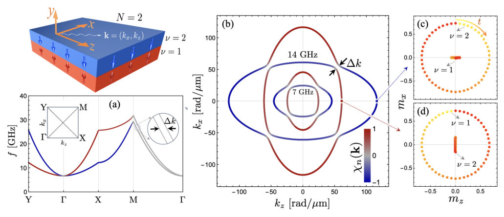
<figcaption class="paper-figure-caption"><b>Fig 1.</b> FIG. 1. Synthetic altermagnetic bilayer composed of two antiferromagnetically coupled ferromagnetic layers (N = 2) with opposite equilibrium magnetizations. (a) Spin-wave dispersion along the high-symmetry path Y−Γ−X−M−Γ of the Brillouin zone. The inset illustrates the reciprocal-space directions and the wave-vector splitting ∆k. (b) Isofrequency contours in the (kx, kz) plane for excitation frequencies of 7 and 14 GHz. The contours exhibit a pronounced anisotropic deformation and a momentum-dependent separation of the two magnon branches, characteristic of altermagnetic order. The color scale represents the magnon polarization parameter χ, highlighting the opposite polarization character...</figcaption>
</figure>
<figure class="paper-figure-card">
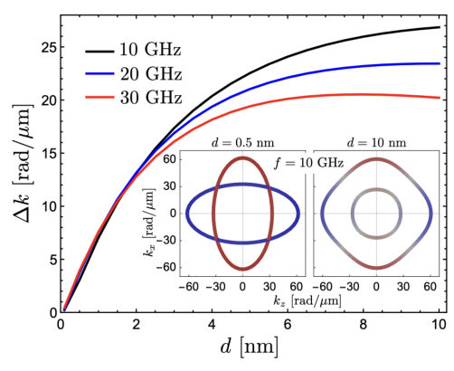
<figcaption class="paper-figure-caption"><b>Fig 2.</b> FIG. 2. Wave-vector separation ∆k along the Γ–M direction as a function of the magnetic layer thickness d for excitation frequencies of 10, 20, and 30 GHz. The increase of ∆k with thickness reflects the progressive enhancement of magneto- static effects in the dipole-exchange regime. Insets show the isofrequency contours at f = 10 GHz for two representative thicknesses, d = 0.5 nm and d = 10 nm. As the thickness increases, the contours become increasingly distorted due to the stronger influence of dipolar interactions, leading to an enhanced wave-vector separation along the Γ–M propagation direction.</figcaption>
</figure>
<figure class="paper-figure-card">
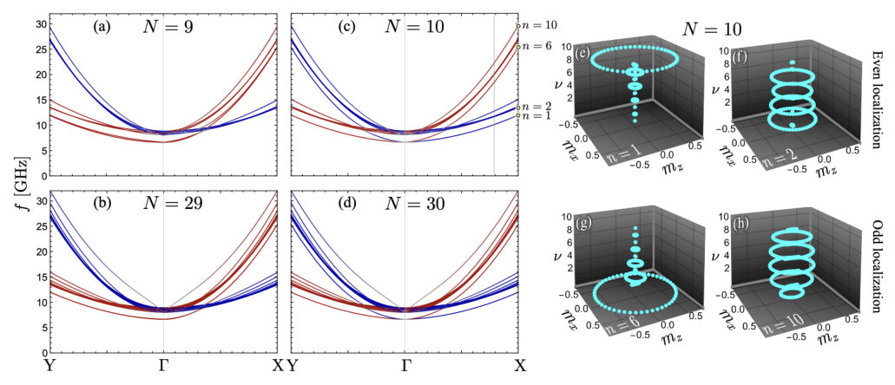
<figcaption class="paper-figure-caption"><b>Fig 3.</b> FIG. 3. (a,b) Spin-wave dispersions for synthetic altermagnetic multilayers with odd numbers of magnetic layers, N = 9 and N = 29, respectively. (c,d) Corresponding spectra for even multilayers with N = 10 and N = 30. (e–h) Layer-resolved precessional trajectories of selected modes marked in panel (c) (modes n = 1, 2, 6 and 10 evaluated at the point X), represented through the normalized dynamical magnetization components (mx, mz) as a function of the layer index ν. The even and odd magnetization oscillations illustrate the sublattice-selective dynamical response that emerges in the synthetic altermagnetic phase.</figcaption>
</figure>
</div>

<p><strong>Summary.</strong> The paper theoretically demonstrates how synthetic altermagnetism can be realized in multilayered magnetic films without requiring intrinsically altermagnetic crystals. By engineering alternating anisotropic exchange couplings, the authors show that magnon spectra exhibit characteristic splitting and nodal structures. This work establishes parity and surface termination as key design principles for controlling these collective quantum magnetic responses.</p>
<p><strong>Why it may be interesting.</strong> This work provides a concrete, material-science inspired model (multilayers) to study exotic quantum magnetic phenomena (altermagnetism), which is relevant for understanding collective excitations in engineered quantum systems.</p>
<details>
<summary>Detailed structure</summary>
<p><strong>Main problem.</strong> To demonstrate a synthetic realization of altermagnetic magnonics beyond the constraints imposed by crystalline symmetries.</p>
<p><strong>Main result.</strong> The authors show that engineered multilayer structures can reproduce characteristic altermagnetic magnon spectra, and this phenomenon is controllable via stack parity and surface termination effects.</p>
<p><strong>Method.</strong> Theoretical modeling involving solving the linearized Landau-Lifshitz equation within a dipole-exchange framework for coupled ferromagnetic multilayers.</p>
<p><strong>Model / system.</strong> The system is an antiferromagnetically coupled multilayer of ferromagnetic films with alternating in-plane exchange anisotropies, forming a continuum platform. The dynamics are governed by the LLG equation applied to spin-wave excitations across multiple layers.</p>
<p><strong>Key observables.</strong> Momentum-dependent branch splitting ($\Delta k$), anisotropic isofrequency contours, and parity-dependent reconstruction of surface vs. bulk magnon modes.</p>
<p><strong>Important parameters / regimes.</strong> Stacking layer number ($N$), spacer thickness, and the relative strength of dipole interactions versus exchange coupling.</p>
<p><strong>Assumptions / limitations.</strong> The analysis relies on the continuum approximation for anisotropic exchange and treats long-range dipolar interactions via magnetostatic formalism.</p>
<p><strong>Figures summary.</strong> Figures illustrate spin-wave dispersion (a) showing momentum-dependent splitting, isofrequency contours (b) exhibiting anisotropy, and layer-resolved dynamics (c, d), with further figures detailing parity dependence in multilayers.</p>
<p><strong>Paper structure.</strong> The paper develops the theoretical framework by defining the effective Hamiltonian/equations of motion for coupled layers, solving the eigenvalue problem for spin waves, analyzing the minimal bilayer case, and finally extending the analysis to finite multilayers to reveal parity-dependent reconstruction effects.</p>
</details>
<details>
<summary>Abstract</summary>
<p>Altermagnetic magnons in crystalline materials exhibit momentum-dependent splitting whose nodal structure and chiral character are governed by the point-group symmetry of the magnetic sublattice rotation. Here, we demonstrate the first synthetic realization of altermagnetic magnonics in a continuum platform composed of antiferromagnetically coupled ferromagnetic films with alternating in-plane exchange anisotropies, showing that the key signatures of altermagnetic magnonics emerge beyond the crystalline setting. Solving the linearized Landau-Lifshitz equation within a dipole-exchange framework, we show that this architecture reproduces the characteristic momentum-dependent splitting, nodal directions, and anisotropic isofrequency contours of A-type altermagnets. Long-range dipolar interactions qualitatively reconstruct this exchange-driven spectrum by lifting the nominal nodal degeneracy, hybridizing opposite-chirality modes, and producing a finite, thickness-dependent wave-vector splitting along directions that are nodal in the exchange-only limit. Extending the bilayer to finite multilayers reveals that synthetic altermagnetism undergoes a parity-dependent reconstruction that separates surface and bulk altermagnetic excitations. These results establish altermagnetic magnon phenomenology as an engineerable collective response of dipole-exchange multilayers beyond microscopic crystal symmetries.</p>
</details>
<p><sub><a href="#top">↑ back to top</a></sub></p>

<p><a id="paper-2606.11777"></a></p>
<h3 id="berry-phase-based-topological-charge-in-quasicrystals-and-their-observable-features-in-photonic-system"><a href="http://arxiv.org/abs/2606.11777v1">Berry-phase-based Topological Charge in Quasicrystals and their Observable Features in Photonic System</a></h3>
<p><strong>Authors:</strong> Ziyi Chen, Jinyu Zou, Jinhua Gao, Gang xu<br>
<strong>Type:</strong> theory · <strong>Category:</strong> other · <strong>PDF:</strong> <a href="https://arxiv.org/pdf/2606.11777v1">https://arxiv.org/pdf/2606.11777v1</a><br>
<strong>Analysis basis:</strong> full PDF text, analyzed in chunks
<strong>Topic relevance:</strong> <code>analog quantum simulation</code> <strong>3/5</strong> · <code>driven-dissipative phase transition</code> <strong>1/5</strong> · <code>interference shaping light</code> <strong>1/5</strong> · <code>quantum optics experiment</code> <strong>1/5</strong></p>
<div class="figure-strip-hint">↔ Scroll figures horizontally</div>
<div class="paper-figures-scroll">
<figure class="paper-figure-card">
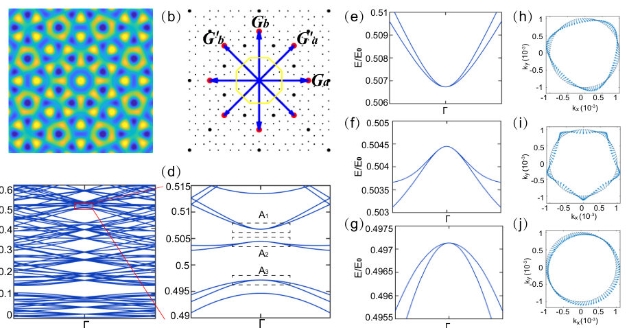
<figcaption class="paper-figure-caption"><b>Fig 1.</b> FIG. 1. (a) Moir´e quasicrystalline potential. (b) Corresponding distribution of reciprocal-lattice points. (c) Band structure after introducing a quasicrystalline potential V near the Γ point along the Γ–Ga direction, with the horizontal coordinate ranging from Γ −0.1Ga to Γ + 0.1Ga. Here E0 = ℏ2|Ga|2/2m, V = 0.2E0, and nc = 3. The energy levels at Γ point are grouped in eights. (d) Zooms in on the bands framed by the red box in (c). The eight energy levels at Γ point consist of three two-dimensional irreducible representations and two one-dimensional irreducible representations. (e)–(g) Zooms in on the three doubly degenerate points marked in (d). (h)–(j) Pseudospin textures on the lower...</figcaption>
</figure>
<figure class="paper-figure-card">
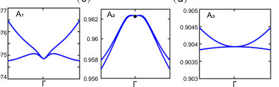
<figcaption class="paper-figure-caption"><b>Fig 2.</b> FIG. 2. (a) Photonic band structure of the quasicrystal along the Γ −Ga direction, with parameters set as nc = 4 and f0 = c/2πa, where a represents the lattice corresponding to the primitive reciprocal vectors. (b)–(d) Zoomed-in views of the three doubly degenerate points marked in (a). (e)–(f) Two eigenmodes at the A2 degeneracy point within a 5a × 5a region, denoted as dx2−y2 and dxy, respectively.</figcaption>
</figure>
<figure class="paper-figure-card">
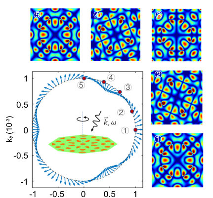
<figcaption class="paper-figure-caption"><b>Fig 3.</b> FIG. 3. Observation of the C = 4 topological charge. The central panel shows the momentum-space pseudospin texture and the experimental scanning scheme (inset). The corre- sponding real-space field patterns ( 1 ○– 5 ○) repeat exactly af- ter a π/2 rotation, directly demonstrating C = 4.</figcaption>
</figure>
</div>

<p><strong>Summary.</strong> This paper develops a general theory to calculate topological charges based on Berry phases in quasicrystals, extending beyond conventional periodic lattices. By applying this framework to photonic quasicrystals, the authors predict that these higher-order topological charges manifest as a distinct, measurable periodicity ($C$ times) in the real-space electromagnetic field pattern when probing the system's momentum space.</p>
<p><strong>Why it may be interesting.</strong> This work bridges concepts from topology (Berry phase) and condensed matter physics into the realm of quasiperiodic materials, providing concrete, measurable predictions for photonic systems that are highly relevant to quantum optics and metamaterials research.</p>
<details>
<summary>Detailed structure</summary>
<p><strong>Main problem.</strong> To extend Berry-phase-based topological charges, traditionally studied in periodic crystals, to quasicrystals and demonstrate their physical observability.</p>
<p><strong>Main result.</strong> A universal framework is established for calculating higher topological charges ($C=4$) in 2D quasicrystals using group representation theory. These charges manifest as a quantifiable winding number of the electromagnetic field pattern in photonic realizations.</p>
<p><strong>Method.</strong> The authors derive effective low-energy Hamiltonians by analyzing band degeneracies at high-symmetry points ($\Gamma$ point) using symmetry constraints and Berry phase calculations.</p>
<p><strong>Model / system.</strong> The study focuses on 2D quasicrystals, exemplified by the $C_{8v}$ symmetry. The theory is applied to both electronic systems (via quasiperiodic potentials) and photonic systems (by analyzing Maxwell's equations with modulated permittivity).</p>
<p><strong>Key observables.</strong> Topological charges ($C=2, 4, -2$), which are diagnosed by the winding number of the pseudospin texture in momentum space. Experimentally, this corresponds to the real-space electromagnetic field pattern repeating $C$ times upon encircling the charge point.</p>
<p><strong>Important parameters / regimes.</strong> The rotational symmetry $n$ dictates the maximum possible topological charge ($C \le n/2$). The modulation strength ($\alpha$) is a key parameter for photonic realization.</p>
<p><strong>Assumptions / limitations.</strong> The analysis relies on constructing an effective Hamiltonian by truncating the infinite-dimensional band structure problem, assuming that large-scale averaging allows for a momentum-space description around $\Gamma$.</p>
<p><strong>Figures summary.</strong> Figures illustrate the physical setup of the quasicrystal potential, the resulting band structures showing degeneracies at $\Gamma$, and crucially, diagrams visualizing the pseudospin texture winding number ($C=4$) alongside the corresponding real-space field pattern repetition.</p>
<p><strong>Paper structure.</strong> The paper first establishes the theoretical framework by deriving topological charges from group theory for 2D quasicrystals. It then applies this to photonic systems, showing how the derived mathematical structure predicts observable features in light propagation, culminating in a proposal for experimental detection via momentum-space scanning.</p>
</details>
<details>
<summary>Abstract</summary>
<p>Topological charges based on Berry phase play the fundamental role in the topological physics. However, such topological charges remain unexplored in quasicrystals, impeding the systematic understanding of topological states in such quasiperiodic systems. In this work, by deriving all the allowed topological charges according to group representation theory and the corresponding low-energy effective Hamiltonians, we establish a universal framework for Berry-phase-based topological charges in two-dimensional quasicrystals. Taking the $C_{8v}$ quasicrystal as an example, we demonstrate and characterize a higher topological charge of $C=4$, which is inaccessible in conventional periodic systems. Applying our framework to photonic quasicrystals, we uncover that the circling of photon momentum around the charge gives a $C$ times winding of the electromagnetic field distribution pattern. Such observable feature provides a direct experimental method to probe the topological charges. Our work paves the way for exploring topological charges in quasiperiodic matter, and fundamentally bridges periodic and quasiperiodic topological band theories.</p>
</details>
<p><sub><a href="#top">↑ back to top</a></sub></p>

<p><a id="paper-2606.12041"></a></p>
<h3 id="reflective-metastructure-q-plate-for-ultrashort-laser-pulses"><a href="http://arxiv.org/abs/2606.12041v1">Reflective Metastructure Q-plate for Ultrashort Laser Pulses</a></h3>
<p><strong>Authors:</strong> Christopher G. O. Weiß, Bert Lägel, Benjamin Stadtmüller, Martin Aeschlimann, Tobias Eul<br>
<strong>Type:</strong> experiment · <strong>Category:</strong> other · <strong>PDF:</strong> <a href="https://arxiv.org/pdf/2606.12041v1">https://arxiv.org/pdf/2606.12041v1</a><br>
<strong>Analysis basis:</strong> full PDF text, analyzed in chunks
<strong>Topic relevance:</strong> <code>interference shaping light</code> <strong>3/5</strong> · <code>quantum optics experiment</code> <strong>3/5</strong></p>
<div class="figure-strip-hint">↔ Scroll figures horizontally</div>
<div class="paper-figures-scroll">
<figure class="paper-figure-card">
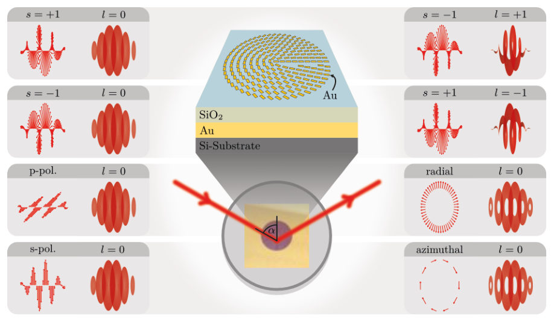
<figcaption class="paper-figure-caption"><b>Fig 1.</b> Figure 1: Operating principle of the reflective plasmonic q-plate. Azimuthally oriented gold nanorods on a SiO2/Au-reflector stack on a Si-substrate impose a spatially varying geometric phase upon reflection under an angle of incidence α. The left panels show the phase front and polarization of the incident beam, whereas the right panels display the corresponding reflected states. Circularly polarized input light is converted into OAM-carrying beams with opposite helicity and ℓ= ±1, while linearly polarized input states give rise to radial and azimuthal vector beams with ℓ= 0.</figcaption>
</figure>
<figure class="paper-figure-card">
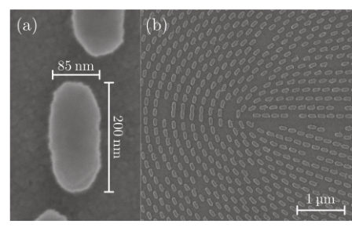
<figcaption class="paper-figure-caption"><b>Fig 2.</b> Figure 2: Scanning electron microscopy (SEM) images of the fabricated reflective plasmonic meta- surface q-plate based on arrays of gold nanorods on a SiO2/Au-substrate. (a) High-magnification SEM image of individual gold nanorods, indicating their typical dimensions (l = 200 nm, w = 85 nm). (b) SEM overview of the central region of the meta- surface showing the azimuthally varying nanorod orientations that implement the q-plate phase pro- file.</figcaption>
</figure>
<figure class="paper-figure-card">
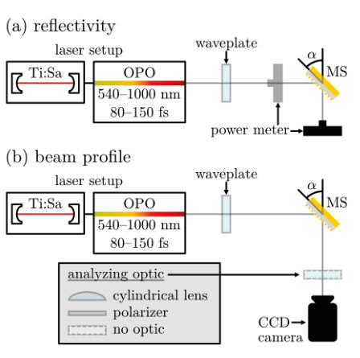
<figcaption class="paper-figure-caption"><b>Fig 3.</b> Figure 3: Schematic of the optical setup for char- acterizing the reflective q-plate. A tunable Ti:Sa- oscillator with an OPO provides femtosecond pulses from 540 nm to 1000 nm with pulse durations of 80 fs to 150 fs. The incident polarization is con- trolled by a quarter- or half-wave plate, and the metasurface (MS) is illuminated at α = 45◦or 5◦. (a) Reflectivity setup with power-meter detection. (b) Beam-profile setup with CCD-camera detection. For further analysis, either no additional optic, a polarizer, or a cylindrical lens can be placed in front of the camera.</figcaption>
</figure>
<figure class="paper-figure-card">
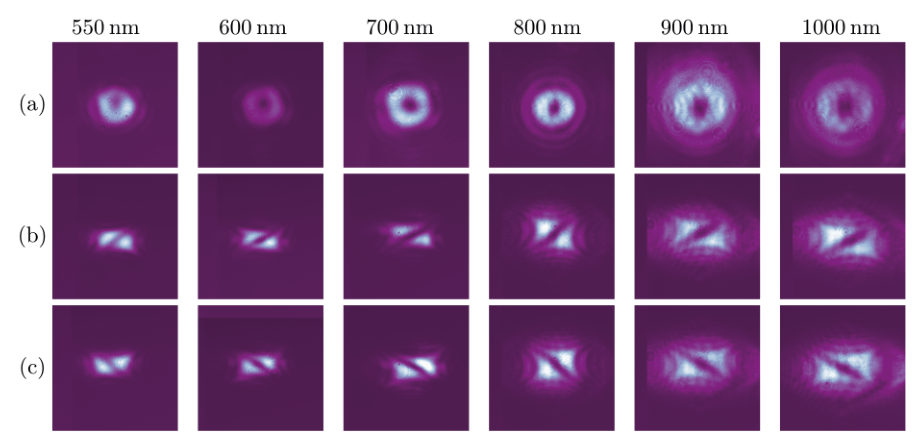
<figcaption class="paper-figure-caption"><b>Fig 4.</b> Figure 4: Wavelength dependent OAM generation under 45◦illumination. (a) Beam profiles after reflection of σ+-light (s = +1) on the q-plate. (b) Beam profile from (a) with inserted cylindrical lens. (c) Beam profile after reflection of σ−-light (s = −1) with inserted cylindrical lens.</figcaption>
</figure>
<figure class="paper-figure-card">
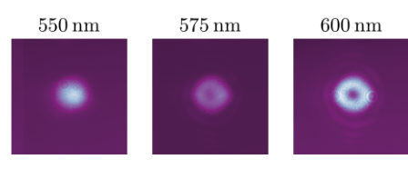
<figcaption class="paper-figure-caption"><b>Fig 5.</b> Figure 5: Wavelength dependent OAM generation under 5◦illumination. Beam profile after reflection of σ+-light (s = +1) on the q-plate for the wave- lengths 550 nm, 575 nm and 600 nm from left to right.</figcaption>
</figure>
</div>

<p><strong>Summary.</strong> The paper presents an experimental realization of a reflective Q-plate using a plasmonic metasurface made of gold nanorods. This device efficiently converts the spin angular momentum (SAM) of incident light into orbital angular momentum (OAM) upon reflection. Its significance lies in its ability to maintain high reflectivity and preserve the integrity of ultrashort laser pulses across a broad spectral range, making it ideal for advanced ultrafast optical applications.</p>
<p><strong>Why it may be interesting.</strong> This work is highly relevant to quantum optics and open quantum systems because it demonstrates a robust, solid-state platform for manipulating the angular momentum of light—a key resource in quantum information processing—using plasmonics rather than bulk optical elements.</p>
<details>
<summary>Detailed structure</summary>
<p><strong>Main problem.</strong> The goal is to develop a highly reflective Q-plate capable of converting orbital angular momentum (OAM) from nanostructures into ultrashort laser pulses without incurring temporal broadening.</p>
<p><strong>Main result.</strong> The proposed plasmonic metasurface successfully achieves high reflectivity and broadband OAM generation for femtosecond pulses, overcoming dispersion issues associated with traditional transmissive Q-plates.</p>
<p><strong>Method.</strong> The authors fabricated a reflective metasurface using ordered arrays of gold nanorods on a dielectric spacer above a back reflector to mimic the phase transformation properties of conventional Q-plates upon reflection.</p>
<p><strong>Model / system.</strong> The physical system is a plasmonic metasurface constructed from anisotropic gold nanorods deposited on an $ ext{SiO}_2/ ext{Au}$-reflector stack. This structure leverages the geometric Pancharatnam-Berry phase acquired during reflection to couple input polarization state (SAM) into output OAM.</p>
<p><strong>Key observables.</strong> High reflectivity ($>60\%$), generation of helical phase fronts ($\ell=\pm 1$) from circularly polarized light, and preservation of ultrashort pulse duration upon reflection.</p>
<p><strong>Important parameters / regimes.</strong> Operating wavelengths range from $550 	ext{ nm}$ to $1000 	ext{ nm}$; incidence angles tested include $\alpha = 45^\circ$ and $\alpha = 5^\circ$; input pulses are in the femtosecond regime ($<30 	ext{ fs}$).</p>
<p><strong>Assumptions / limitations.</strong> The primary assumption is that the metasurface can effectively mimic the required birefringence landscape of conventional Q-plates while operating robustly under reflection geometry.</p>
<p><strong>Figures summary.</strong> Figures illustrate the device schematic, SEM images confirming nanorod dimensions and orientation, optical setups for characterization (reflectivity/beam profiles), and wavelength-dependent measurements showing OAM generation ($\ell=\pm 1$ donut modes) and polarization conversion.</p>
<p><strong>Paper structure.</strong> The paper introduces the need for reflective Q-plates, details the plasmonic metasurface design using gold nanorods, presents experimental characterization across various wavelengths and incidence angles, confirms broadband operation, and discusses pulse integrity.</p>
</details>
<details>
<summary>Abstract</summary>
<p>The orbital angular momentum of light is an intriguing property for developing light driven applications. It emerged as an independent degree of freedom by which to manipulate light and, consequently, the interaction of light with matter. Several methods exist for the generation of light carrying orbital angular momentum, mostly employing transmitting or reflecting optical components, which radially modulate the phase profile of the light. As one of such components, transmissive q-plates established themselves as standard elements due to their usability over a broad wavelength range. Here, we present our approach to build a highly reflective q-plate based on a plasmonic metasurface capable of converting orbital angular momentum from the nanostructure to ultrashort laser pulses without temporal broadening. We highlight its working principle over a wide range of wavelengths for reflection under normal and gracing incidence.</p>
</details>
<p><sub><a href="#top">↑ back to top</a></sub></p>

<p><a id="paper-2606.11364"></a></p>
<h3 id="chiral-anomaly-and-planar-hall-conductance-in-pseudospin-math1187math-fermions"><a href="http://arxiv.org/abs/2606.11364v1">Chiral anomaly and planar Hall conductance in pseudospin-$1$ Fermions</a></h3>
<p><strong>Authors:</strong> Azaz Ahmad<br>
<strong>Type:</strong> theory · <strong>Category:</strong> other · <strong>PDF:</strong> <a href="https://arxiv.org/pdf/2606.11364v1">https://arxiv.org/pdf/2606.11364v1</a><br>
<strong>Analysis basis:</strong> full PDF text, analyzed in chunks
<strong>Topic relevance:</strong> <code>Keldysh / 2PI / non-Gaussian methods</code> <strong>3/5</strong> · <code>methods for driven-dissipative</code> <strong>1/5</strong> · <code>non-equilibrium dynamics</code> <strong>1/5</strong></p>
<div class="figure-strip-hint">↔ Scroll figures horizontally</div>
<div class="paper-figures-scroll">
<figure class="paper-figure-card">
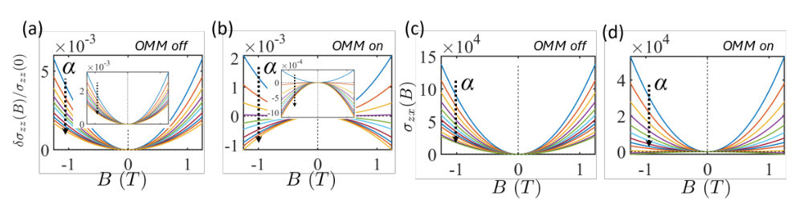
<figcaption class="paper-figure-caption"><b>Fig 1.</b> Figure 1. We investigate the LMC and PHC in a pseudospin-1 semimetal, both in the presence and absence of the OMM, for two representative values of the field orientation angle: γ = π/2 and γ = π/4. Our analysis reveals that an increase in the relative strength of internode (intervalley) scattering, quantified by the parameter α, leads to a sign reversal in both LMC and PHC, from positive to negative. Furthermore, in configurations where the electric and magnetic fields are non-collinear, the critical scattering strength αc required to induce this reversal decreases progressively as γ deviates from the orthogonal limit (γ = π/2). This behavior underscores the sensitivity of magnetotransport...</figcaption>
</figure>
<figure class="paper-figure-card">
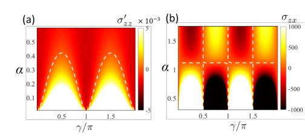
<figcaption class="paper-figure-caption"><b>Fig 2.</b> Figure 2. Phase plot of LMC and PHC for pseudospin-1 fermions with respect to intervalley scattering strength α and magnetic field angle γ measured from increasing x-direction. While LMC has its maxima at π/2, PHC vanishes for this parallel field configuration. White dotted curves separate the region having opposing signs of conductivities, confirm- ing the dependence αc(γ): αc ∼sin2 γ in LMC. PHC van- ishes for both the field orientations: γ = 0 and γ = π/2 as plotted in (b), shows sign reversal above a fixed value of αP HC c &gt; αLMC c . LMC is normalized by zero field value, i.e., σ ′ zz = (σzz(B = 0.50 T) −σzz(B = 0 T))/σzz(B = 0 T), while PHC is not normalized.</figcaption>
</figure>
<figure class="paper-figure-card">
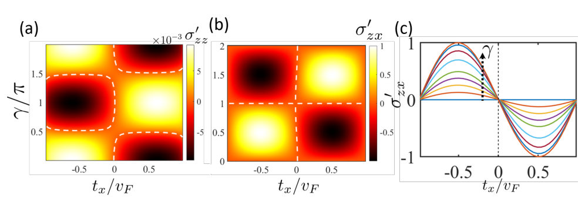
<figcaption class="paper-figure-caption"><b>Fig 3.</b> Figure 3. (a-b) The LMC and PHC are analyzed as functions of the tilt along the x-axis and the orientation angle γ of the applied magnetic field relative to the ˆx-axis, for a constant magnetic field strength of B = 0.5 T and α = 0.20. In this analysis, the cone tilt directions are assumed to be oppositely oriented. (c) PHC is plotted as a function of tilt tx. PHC shows a non-monotonic behavior and is an odd function of tilt, attaining its extrema at |tx| = 0.50. Along the direction of the arrow, the γ is varied from 0 to π/2. PHC is normalized to its maximum value and LMC as in Fig. 2(a).</figcaption>
</figure>
<figure class="paper-figure-card">
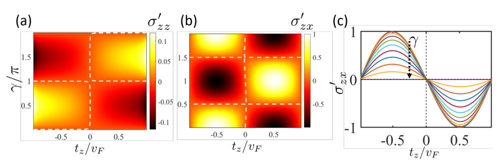
<figcaption class="paper-figure-caption"><b>Fig 4.</b> Figure 4. (a-b) The LMC and PHC are analyzed as functions of the tilt along the z-axis and the orientation angle γ of the applied magnetic field relative to the ˆz-axis, for a constant magnetic field strength of B = 0.5 T. In this analysis, the tilt directions of the cones are considered to be oppositely oriented. (c) PHC as a function of tilt tz at different values of γ.</figcaption>
</figure>
<figure class="paper-figure-card">
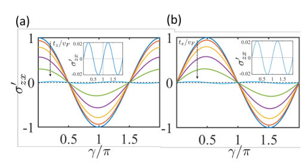
<figcaption class="paper-figure-caption"><b>Fig 5.</b> Figure 5. (a) The angular dependence of the PHC is inves- tigated for varying values of the tilt parameter tz. The in- set corresponds to the untilted case (tz = 0), exhibiting the conventional sin 2γ dependence characteristic of systems with preserved azimuthal symmetry. Introducing a finite tilt modi- fies this angular behavior, progressively transitioning towards a cos γ dependence as tz increases in magnitude. Specifically, along the indicated direction in the plot, the ratio tz/vF is systematically varied from −0.5 to 0, where the tilt orienta- tion is considered to be oppositely aligned for the two cones, emphasizing the role of tilt anisotropy in shaping the PHC response. (b) For...</figcaption>
</figure>
</div>

<p><strong>Summary.</strong> This theoretical study analyzes how chiral anomalies manifest as measurable transport signals (PHC and LMC) in advanced systems like pseudospin-1 Weyl semimetals. By incorporating complex effects such as momentum-dependent scattering and dispersion tilting, the authors predict characteristic angular anisotropies and sign reversals in these magnetotransport coefficients. The findings offer concrete, experimentally testable signatures for identifying multifold fermion materials.</p>
<p><strong>Why it may be interesting.</strong> This work provides a detailed, quantitative framework for interpreting complex magnetotransport measurements in topological materials by explicitly modeling higher-order pseudospin degrees of freedom and their coupling to external fields.</p>
<details>
<summary>Detailed structure</summary>
<p><strong>Main problem.</strong> The study investigates magnetotransport signatures, specifically Planar Hall Conductance (PHC) and Longitudinal Magnetoconductance (LMC), arising from the chiral anomaly in systems with higher-pseudospin quasiparticle excitations.</p>
<p><strong>Main result.</strong> The PHC exhibits characteristic angular dependencies ($\sin 2\gamma$ without tilt, $\sin \gamma$ or $\cos \gamma$ with tilt) and shows a sign reversal when scattering strength increases. Tilt introduces strong anisotropy to the planar Hall signal.</p>
<p><strong>Method.</strong> Semiclassical Boltzmann transport theory is employed within the relaxation-time approximation, incorporating momentum-dependent scattering and orbital magnetic moment corrections.</p>
<p><strong>Model / system.</strong> The model uses pseudospin-1 Weyl semimetals characterized by a Lagrangian density describing multifold chiral quasiparticles. The analysis accounts for both generic tilt of the dispersion and misalignment between E and B fields to break azimuthal symmetry.</p>
<p><strong>Key observables.</strong> Planar Hall Conductance (PHC), Longitudinal Magnetoconductance (LMC), angular dependence ($\sin 2\gamma$, $\sin \gamma$, $\cos \gamma$), and nonmonotonic dependence on tilt magnitude.</p>
<p><strong>Important parameters / regimes.</strong> Scattering strength ($\alpha$), magnetic field angle ($\gamma$), and the tilt parameters ($t_x, t_z$).</p>
<p><strong>Assumptions / limitations.</strong> The analysis relies on semiclassical dynamics and assumes that the Lorentz-force contribution can be neglected when $\omega_c 	au \ll 1$.</p>
<p><strong>Figures summary.</strong> Figures illustrate LMC and PHC dependence on scattering strength ($\alpha$) and field angle ($\gamma$), demonstrating sign reversals. Further figures map out the anisotropy of PHC as a function of tilt components ($t_x, t_z$) and angle ($\gamma$).</p>
<p><strong>Paper structure.</strong> The paper builds from general theoretical frameworks (Hamiltonian/Lagrangian) to specific transport calculations using the Boltzmann equation. It systematically analyzes the effects of symmetry breaking mechanisms—namely, scattering strength variation and explicit dispersion tilting—on the resulting magnetoconductivity components.</p>
</details>
<details>
<summary>Abstract</summary>
<p>Positive longitudinal magnetoconductance (LMC) and planar Hall conductance (PHC) are hallmark transport signatures of the chiral anomaly in Weyl semimetals. Recent theoretical developments have extended Weyl fermions to multifold Fermionic systems with higher-pseudospin quasiparticle excitations, motivating the study of their magnetotransport properties. Here, we employ semiclassical Boltzmann transport theory within the relaxation-time approximation to investigate magnetotransport in pseudospin-1 Weyl semimetals, incorporating momentum-dependent scattering, orbital magnetic moment corrections, and charge-conservation constraints. To obtain a finite PHC, we break azimuthal symmetry through either a generic tilt of the quasiparticle dispersion or a finite misalignment between the electric and magnetic fields. In the untilted case, the PHC is positive and scales quadratically with magnetic field strength. Increasing the scattering strength induces a sign reversal of the PHC, producing a transition from positive to negative values. The PHC further exhibits the characteristic angular dependence $\sin 2γ$, where $γ$ is the angle between the magnetic field and the $x$-axis. Tilt qualitatively alters this behavior: tilt along the $x$- and $z$-directions changes the angular response to $\sinγ$ and $\cosγ$, respectively, generating strong anisotropy in the planar Hall signal. Moreover, the PHC shows a nonmonotonic dependence on tilt magnitude, revealing the interplay between tilt-induced symmetry breaking and chiral-anomaly-driven transport. Our results provide experimentally accessible signatures of multifold fermions and a framework for interpreting magnetotransport measurements in candidate materials of space groups 199, 214, and 220.</p>
</details>
<p><sub><a href="#top">↑ back to top</a></sub></p>

<p><a id="paper-2606.12239"></a></p>
<h3 id="stacking-switching-between-correlation-protected-radial-rashba-field-and-persistent-spin-textures-in-graphene-encapsulated-by-1t-tasmath1209math-monolayers"><a href="http://arxiv.org/abs/2606.12239v1">Stacking switching between correlation-protected radial Rashba field and persistent spin textures in graphene encapsulated by 1T-TaS$_2$ monolayers</a></h3>
<p><strong>Authors:</strong> Juraj Mnich, Marko Milivojević, Martin Gmitra<br>
<strong>Type:</strong> theory · <strong>Category:</strong> other · <strong>PDF:</strong> <a href="https://arxiv.org/pdf/2606.12239v1">https://arxiv.org/pdf/2606.12239v1</a><br>
<strong>Analysis basis:</strong> full PDF text, analyzed in chunks
<strong>Topic relevance:</strong> <code>spintronics-quantum-optics interface</code> <strong>3/5</strong> · <code>exotic spin models in light-matter</code> <strong>1/5</strong> · <code>non-equilibrium dynamics</code> <strong>1/5</strong></p>
<div class="figure-strip-hint">↔ Scroll figures horizontally</div>
<div class="paper-figures-scroll">
<figure class="paper-figure-card">
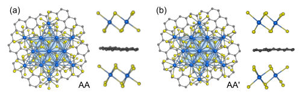
<figcaption class="paper-figure-caption"><b>Fig 1.</b> Figure 1. Structural model of encapsulated graphene between 1T-TaS2 monolayers in the CDW phase of the David star periodic lattice distortions. (a) asymmetric AA stacking of the 1T-TaS2 monolayers in the perspective top-like and side view, and (b) symmetric AA’ stacking with a horizontal mir- ror plane. The blue and yellow balls represent the Ta atoms and the S atoms, and the gray balls are the C atoms.</figcaption>
</figure>
<figure class="paper-figure-card">
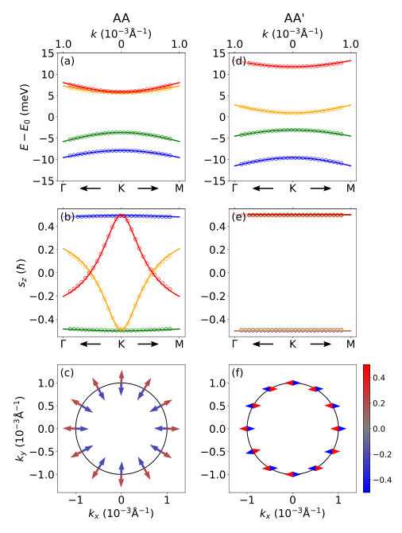
<figcaption class="paper-figure-caption"><b>Fig 2.</b> Figure 2. Low-energy electronic band structure and spin ex- pectation values of encapsulated graphene between 1T-TaS2 monolayers in the CDW phase. Left panels (a)–(c) correspond to the asymmetric AA stacking configuration, and right pan- els (d)–(f) denote the symmetric AA’ stacking configuration. (a), (d) Energy bands near the charge neutrality point, where colored circles represent DFT calculations and solid lines in- dicate the effective tight-binding model fits. The color cod- ing tracks band indexing: red/orange and green/blue denote the conduction-like and valence-like bands, respectively. (b), (e) Out-of-plane spin expectation value sz along the high- symmetry k-path. (c), (f) Spin...</figcaption>
</figure>
<figure class="paper-figure-card">
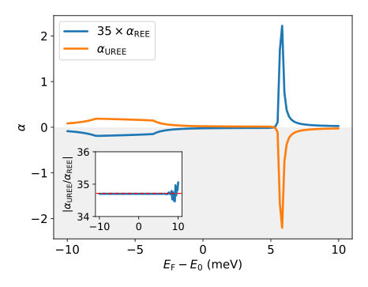
<figcaption class="paper-figure-caption"><b>Fig 3.</b> Figure 3. Charge to spin conversion coefficients in graphene encapsulated by 1T-TaS2 in AA stacking for (un)conventional Rashba-Edelstein effect. The magnitude of αREE is increased by a factor of 35. The inset shows the ratio of charge to spin conversion coefficients for the unconventional and con- ventional cases, while the red dashed line indicates the esti- mated ratio.</figcaption>
</figure>
<figure class="paper-figure-card">
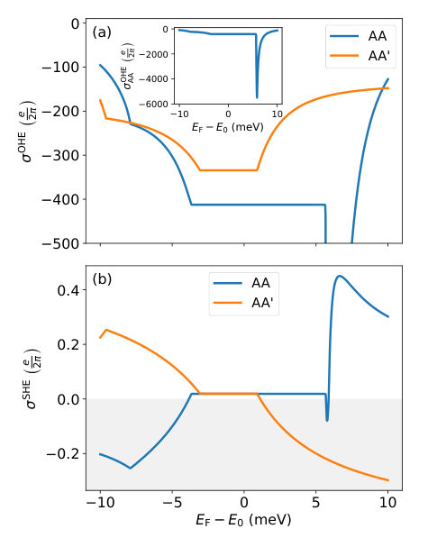
<figcaption class="paper-figure-caption"><b>Fig 4.</b> Figure 4. Calculated linear-response transport coefficients as a function of the Fermi energy EF −E0 for the AA (blue lines) and AA’ (orange lines) stacking configurations. (a) Or- bital Hall conductivity σOHE with plateau signatures inside the proximity-induced spectral gaps and monotonic depen- dences resolving discrete band edge contributions. The inset highlights a pronounced resonant enhancement occurring at the energetic alignment of the two lowest conduction bands. (b) Spin Hall conductivity σSHE, displaying significantly sup- pressed magnitudes relative to σOHE and exhibiting a sign in- version between the AA and AA’ stackings across the charge neutrality region.</figcaption>
</figure>
</div>

<p><strong>Summary.</strong> This theoretical study explores charge transport in graphene encapsulated by 1T-TaS2 monolayers, showing that the stacking geometry is crucial. The AA stacking induces a strong radial Rashba field leading to enhanced spin effects, whereas the AA' stacking stabilizes out-of-plane spins and maximizes the orbital Hall effect. This highlights how structural control can engineer distinct topological electronic responses.</p>
<p><strong>Why it may be interesting.</strong> This work provides a clear example of how interfacial symmetry breaking (stacking order) can act as a quantum switch, tuning the dominant topological transport mechanism between spin-based and orbital-based responses.</p>
<details>
<summary>Detailed structure</summary>
<p><strong>Main problem.</strong> The study investigates how the stacking order of graphene encapsulated by 1T-TaS2 monolayers dictates fundamentally distinct charge-to-spin and charge-to-orbital transport regimes.</p>
<p><strong>Main result.</strong> Asymmetric (AA) stacking yields a strong, radial Rashba field leading to an unconventional Rashba-Edelstein effect, while symmetric (AA') stacking establishes stable out-of-plane spin textures and highly efficient orbital Hall effects.</p>
<p><strong>Method.</strong> The research employs first-principles DFT calculations, tight-binding modeling, and the Kubo formalism to calculate linear response transport coefficients.</p>
<p><strong>Model / system.</strong> The system is graphene encapsulated between two 1T-TaS2 monolayers in their charge density wave phase. The electronic structure and transport are modeled using effective Hamiltonians incorporating Rashba coupling and SOC terms.</p>
<p><strong>Key observables.</strong> Orbital Hall conductivity ($\sigma_{	ext{OHE}}$), Spin Hall conductivity ($\sigma_{	ext{SHE}}$), Rashba-Edelstein effect magnitude, and persistent spin textures ($s_z$).</p>
<p><strong>Important parameters / regimes.</strong> Stacking order (AA vs. AA'), Fermi energy relative to the Dirac point ($E_F - E_0$), and proximity-induced Rashba phase ($\pi/2$ for AA).</p>
<p><strong>Assumptions / limitations.</strong> The analysis assumes a vacuum gap of $\approx 15$ Å, and calculations are performed within linear response theory.</p>
<p><strong>Figures summary.</strong> Figures compare band structures and spin expectation values; Figure 4 specifically plots $\sigma_{	ext{OHE}}$ and $\sigma_{	ext{SHE}}$ versus $E_F - E_0$, showing plateaus in OHE inside spectral gaps for both stacking types.</p>
<p><strong>Paper structure.</strong> The paper systematically analyzes the electronic structure, spin textures, and transport coefficients ($\sigma_{	ext{OHE}}, \sigma_{	ext{SHE}}$) by comparing results derived from two distinct structural configurations: AA (asymmetric) and AA' (symmetric).</p>
</details>
<details>
<summary>Abstract</summary>
<p>We investigate the electronic structure, spin textures, and charge to spin/orbital transport in graphene encapsulated by 1T-TaS$_{2}$ monolayers in the charge density wave phase. Using first-principles calculations, tight-binding modeling, and the Kubo formalism, we show that the encapsulation stacking dictates fundamentally distinct transport regimes. In the asymmetrical (AA) stacking, proximity fields from both interfaces constructively interfere, yielding a cumulative Rashba phase of nearly $π/2$. This pure radial Rashba spin pattern leads to the unconventional Rashba-Edelstein effect, which robustly dominates over the conventional response by a factor of 35 across a wide energy range. Conversely, the symmetrical (AA') stacking preserves a horizontal mirror symmetry, establishing a stable, purely out-of-plane persistent spin texture. Furthermore, the computed orbital Hall effect is exceptionally efficient, surpassing the spin Hall effect by three orders of magnitude. Within the proximity-induced spectral gaps, the orbital Hall conductivity exhibits a finite plateau, whereas the spin Hall conductivity vanishes. Our findings establish graphene encapsulated heterostructures as a promising system for realizing distinct charge to spin and charge to orbital interconversion regimes determined by the choice of stacking order.</p>
</details>
<p><sub><a href="#top">↑ back to top</a></sub></p>

<p><a id="paper-2606.11685"></a></p>
<h3 id="dspingnn-a-physics-informed-equivariant-graph-neural-network-for-dynamic-magnetic-exchange-prediction-in-strain-deformed-monolayer-crimath1222math"><a href="http://arxiv.org/abs/2606.11685v1">DSpinGNN: A Physics-Informed Equivariant Graph Neural Network for Dynamic Magnetic Exchange Prediction in Strain-Deformed Monolayer CrI$_3$</a></h3>
<p><strong>Authors:</strong> Isam A. Balghari, M. Faryad, M. Sabieh Anwar<br>
<strong>Type:</strong> theory · <strong>Category:</strong> disordered systems and neural networks · <strong>PDF:</strong> <a href="https://arxiv.org/pdf/2606.11685v1">https://arxiv.org/pdf/2606.11685v1</a><br>
<strong>Analysis basis:</strong> full PDF text, analyzed in chunks
<strong>Topic relevance:</strong> <code>non-equilibrium dynamics</code> <strong>2/5</strong> · <code>analog quantum simulation</code> <strong>1/5</strong> · <code>exotic spin models in light-matter</code> <strong>1/5</strong> · <code>methods for driven-dissipative</code> <strong>1/5</strong> · <code>spintronics-quantum-optics interface</code> <strong>1/5</strong></p>
<div class="figure-strip-hint">↔ Scroll figures horizontally</div>
<div class="paper-figures-scroll">
<figure class="paper-figure-card">
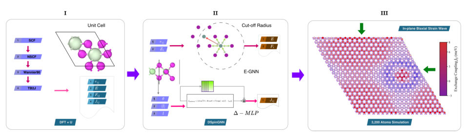
<figcaption class="paper-figure-caption"><b>Fig 1.</b> FIG. 1. Complete workflow of the DSpinGNN framework for mesoscale dynamic magnetic map-</figcaption>
</figure>
<figure class="paper-figure-card">
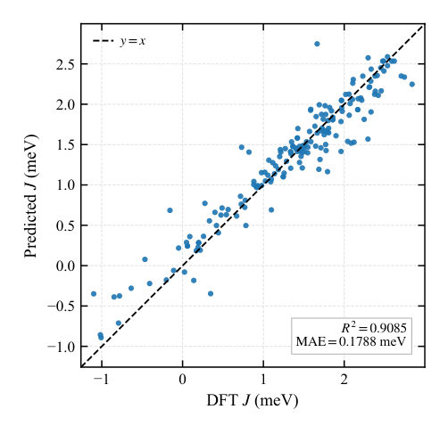
<figcaption class="paper-figure-caption"><b>Fig 2.</b> FIG. 2. Parity plot of DSpinGNN predicted exchange coupling Jij vs. DFT+U ground-truth val-</figcaption>
</figure>
<figure class="paper-figure-card">
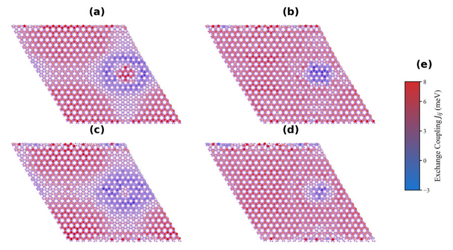
<figcaption class="paper-figure-caption"><b>Fig 3.</b> FIG. 3. Predicted exchange coupling landscape during strain wave propagation and reflection in</figcaption>
</figure>
<figure class="paper-figure-card">
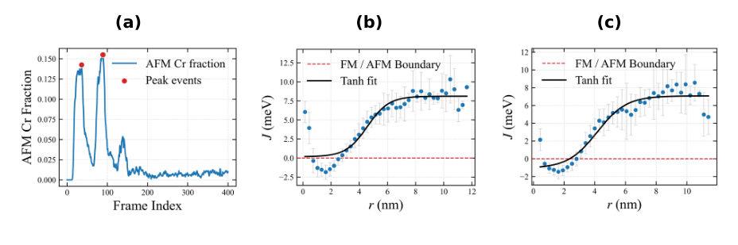
<figcaption class="paper-figure-caption"><b>Fig 4.</b> FIG. 4. Quantitative mesoscale observables from the 3,200-atom DSpinGNN simulation. (a) AFM</figcaption>
</figure>
</div>

<p><strong>Summary.</strong> This work introduces DSpinGNN, an advanced machine learning model that predicts strain-dependent magnetic exchange couplings in monolayer CrI$_3$. By combining equivariant graph networks with physics constraints derived from the Goodenough-Kanamori rules, it accurately models how mechanical strain generates spatially heterogeneous magnetic textures. The resulting framework provides testable mesoscopic predictions for cryogenic magnetic measurements.</p>
<p><strong>Why it may be interesting.</strong> The integration of equivariant ML directly into predicting magnetic interactions under mechanical stress provides a powerful, transferable tool for simulating complex quantum materials behavior at mesoscopic scales, bridging solid-state theory and AI.</p>
<details>
<summary>Detailed structure</summary>
<p><strong>Main problem.</strong> The core challenge is accurately calculating the instantaneous, position-dependent isotropic magnetic exchange coupling ($J_{ij}$) across a crystal lattice undergoing dynamic structural deformation.</p>
<p><strong>Main result.</strong> DSpinGNN successfully predicts these couplings on unseen data and simulates strain wave propagation, yielding testable mesoscopic predictions like domain wall width ($\xi=1.7 	ext{ nm}$) and oscillation period ($  au=0.27     ext{ ps}$).</p>
<p><strong>Method.</strong> A bifurcated machine-learning architecture combines an E(3)-equivariant GNN for structural dynamics with a physics-informed $\Delta$-MLP that maps local bond geometry to $J_{ij}$, incorporating the Goodenough-Kanamori superexchange relationship.</p>
<p><strong>Model / system.</strong> The system is monolayer CrI$_3$, modeled using an effective classical Heisenberg Hamiltonian ($H_{	ext{spin}}$). The framework operates under several approximations, including the collinear Ising limit and adiabatic decoupling between structure and magnetism.</p>
<p><strong>Key observables.</strong> Energy MAE (1.1 meV/atom), Force MAE (6.5 meV/Å), Exchange Coupling MAE (0.18 meV), Domain wall width ($\xi$), Oscillation period ($    au$).</p>
<p><strong>Important parameters / regimes.</strong> Temperature ($T=5 	ext{ K}$), Strain magnitude (up to $\pm 9.1\%$ compression causing FM-to-AFM transition).</p>
<p><strong>Assumptions / limitations.</strong> The model assumes an adiabatic decoupling between structural dynamics and magnetic coupling, and it is restricted to the collinear isotropic limit by omitting SOC effects.</p>
<p><strong>Figures summary.</strong> Figures illustrate the workflow from DFT data generation to ML prediction; key results show $J_{ij}$ landscapes during strain wave reflection, confirming the formation of transient AFM-sign zones. Quantitative analysis provides fitted values for $\xi$ and $   au$.</p>
<p><strong>Paper structure.</strong> The paper first establishes the computational difficulty (instantaneous $J_{ij}$). It then details the DSpinGNN architecture—the E-GNN structural branch and the physics-informed $\Delta$-MLP exchange predictor. The methodology is validated on a test set, followed by mesoscale simulations of strain wave dynamics to extract quantitative physical observables.</p>
</details>
<details>
<summary>Abstract</summary>
<p>Resolving the instantaneous, position-dependent isotropic magnetic exchange coupling $J_{ij}$ across a dynamically deforming crystal lattice requires a computational approach that simultaneously handles structural forces and magnetic interactions at length scales inaccessible to first-principles methods. Here we introduce DSpinGNN, a bifurcated machine-learning architecture comprising an $E(3)$-equivariant graph neural network (E-GNN) for classical Langevin structural dynamics and a physics-informed $Δ$-MLP that maps instantaneous local Cr-I-Cr bond geometry to isotropic exchange couplings, with the Goodenough-Kanamori superexchange relationship embedded as an analytical inductive bias. Trained on 345 DFT+U configurations of monolayer CrI$_3$ and evaluated on a strictly withheld 61-configuration test set, DSpinGNN simultaneously achieves an energy MAE of $1.1$ meV/atom, a force MAE of $6.5$ meV/Å, and an exchange coupling MAE of $0.18$ meV ($R^2 = 0.91$). Deployed at 400$\times$ scale in a 3,200-atom supercell under a collinear Ising-constrained adiabatic approximation at $5$ K, the model maps the local exchange response to a propagating biaxial strain wave. Wave reflection at periodic boundaries generates transient constructive interference regions where local compressive strain exceeds the DFT-established FM-to-AFM threshold, producing spatially heterogeneous exchange coupling textures that damp as the wave dissipates. Quantitative analysis yields a domain wall width of $ξ= 1.7 \pm 0.3$~nm and a constructive-interference oscillation period of $τ= 0.27$~ps -- mesoscopic observables inaccessible to direct DFT and constituting testable predictions for cryogenic magnetic force microscopy. DSpinGNN provides a reproducible, transferable framework for mesoscale exchange mapping in strain-driven 2D magnetic materials.</p>
</details>
<p><sub><a href="#top">↑ back to top</a></sub></p>

<p><a id="paper-2606.11365"></a></p>
<h3 id="color-rule-function-encoding-for-combinatorial-memory"><a href="http://arxiv.org/abs/2606.11365v1">Color-Rule-Function Encoding for Combinatorial Memory</a></h3>
<p><strong>Authors:</strong> Alexander Khitun<br>
<strong>Type:</strong> theory · <strong>Category:</strong> other · <strong>PDF:</strong> <a href="https://arxiv.org/pdf/2606.11365v1">https://arxiv.org/pdf/2606.11365v1</a><br>
<strong>Analysis basis:</strong> full PDF text, analyzed in chunks
<strong>Topic relevance:</strong> <code>analog quantum simulation</code> <strong>1/5</strong> · <code>entanglement &amp; information structure</code> <strong>1/5</strong> · <code>methods for driven-dissipative</code> <strong>1/5</strong> · <code>spintronics-quantum-optics interface</code> <strong>1/5</strong></p>
<div class="figure-strip-hint">↔ Scroll figures horizontally</div>
<div class="paper-figures-scroll">
<figure class="paper-figure-card">
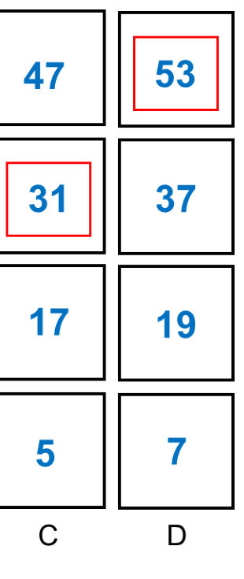
<figcaption class="paper-figure-caption"><b>Fig 1.</b> Figure 1</figcaption>
</figure>
<figure class="paper-figure-card">
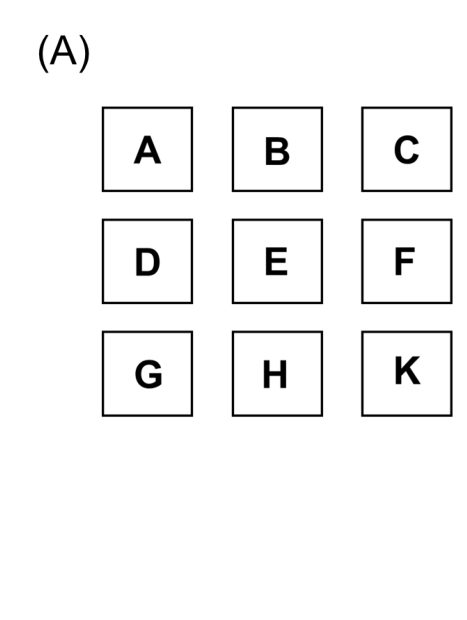
<figcaption class="paper-figure-caption"><b>Fig 2.</b> Figure 2</figcaption>
</figure>
<figure class="paper-figure-card">
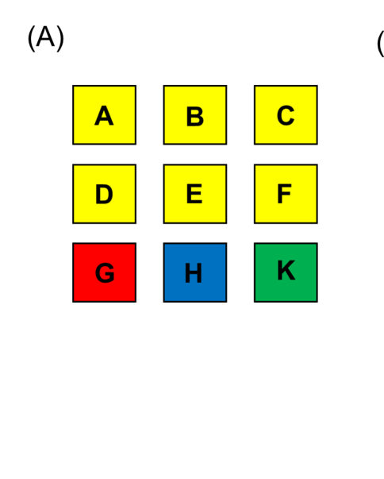
<figcaption class="paper-figure-caption"><b>Fig 3.</b> Figure 3</figcaption>
</figure>
<figure class="paper-figure-card">

<figcaption class="paper-figure-caption"><b>Fig 4.</b> Figure 4</figcaption>
</figure>
<figure class="paper-figure-card">

<figcaption class="paper-figure-caption"><b>Fig 5.</b> Figure 5</figcaption>
</figure>
</div>

<p><strong>Summary.</strong> This paper proposes the Color-Rule-Function (CRF) method to encode data into combinatorial memory paths within a structured mesh. It demonstrates that this approach offers a superior scaling ($\mathcal{O}(N^4)$) compared to conventional memories, potentially enabling ultra-high-density storage for read-only applications. The core challenge remains optimizing the rule set and understanding the minimum achievable Hamming distance.</p>
<p><strong>Why it may be interesting.</strong> While not directly quantum, the concept of encoding information into complex structural constraints (paths/rules) shares conceptual parallels with topological quantum error correction or state preparation in highly constrained physical systems.</p>
<details>
<summary>Detailed structure</summary>
<p><strong>Main problem.</strong> To develop a systematic encoding framework for representing information in combinatorial memory that surpasses the scaling limits of conventional storage technologies.</p>
<p><strong>Main result.</strong> The Color-Rule-Function (CRF) approach achieves a design space capacity scaling of $\mathcal{O}(N^4)$, potentially leading to data storage densities exceeding $10^{19}$ bits/cm$^2$ in customized hardware realizations.</p>
<p><strong>Method.</strong> Information is encoded by selecting paths through a structured mesh, assigning values (colors) to cells, defining rules based on path colors, and constructing a final state via a Boolean function.</p>
<p><strong>Model / system.</strong> The system models combinatorial memory using an $N \times N$ mesh structure. The hardware realization involves three modules: a Mesh Module (frequency generators), a Rule Module (frequency decoders/filters), and a Function Module (Boolean logic gates, potentially magnonic).</p>
<p><strong>Key observables.</strong> Path states (0 or 1), design space capacity ($ ext{BCRF}$), data storage density (bits/cm$^2$), and the minimum Hamming distance.</p>
<p><strong>Important parameters / regimes.</strong> $N$ (Mesh dimension), number of colors, number of rules, and the complexity scaling exponents ($N^4$ vs $N^2$).</p>
<p><strong>Assumptions / limitations.</strong> The advantage relies heavily on using customized module designs rather than universal ones; finding the optimal CRF encoding is computationally hard.</p>
<p><strong>Figures summary.</strong> Figures illustrate the general architecture (Mesh $
ightarrow$ Rule $
ightarrow$ Function), show colored meshes for encoded data examples, and compare scaling trends between different memory types.</p>
<p><strong>Paper structure.</strong> The paper introduces the CRF framework via four steps of encoding. It analyzes the theoretical design space scaling ($\mathcal{O}(N^4)$) compared to conventional methods. The discussion then focuses on hardware realization using magnonics and comparing storage density estimates for universal versus customized module designs.</p>
</details>
<details>
<summary>Abstract</summary>
<p>Combinatorial memory is a class of memory in which information is encoded in the set of paths through a structured mesh. In this work, we introduce a systematic encoding framework, referred to as the Color-Rule-Function (CRF) approach, for representing information in combinatorial memory. The method consists of four key steps: selecting a sequence of paths in the mesh, assigning values (e.g., colors) to each cell, defining a set of rules based on the values encountered along each path, and constructing a Boolean function that determines the state of each path. . The coding procedure is illustrated by several examples. The design space scales of the CRF scale fundamentally faster compared to conventional memory. This apparent advantage arises from the use of rule-based and functional representations but is accompanied by increased hardware complexity. A possible hardware realization of the CRF framework is discussed. Importantly, the hardware overhead can be substantially reduced through the use of customized modules. The examples of the customized design are described in the text. The combination of CRF coding with customized module design may lead to a practical advantage in data storage density. According to the estimates, the data storage density may exceed Exabit per centimeter squared. A key problem that requires further investigation is related to the minimum Hamming distance between an arbitrary target bit sequence and the closest sequence realizable within the CRF framework under fixed hardware constraints.</p>
</details>
<p><sub><a href="#top">↑ back to top</a></sub></p>

<p><a id="paper-2606.11973"></a></p>
<h3 id="interfacial-coupling-and-sparse-intercalation-of-7-atom-wide-armchair-graphene-nanoribbons-by-n-heterocyclic-carbene-monolayers"><a href="http://arxiv.org/abs/2606.11973v1">Interfacial Coupling and Sparse Intercalation of 7-Atom-Wide Armchair Graphene Nanoribbons by N-Heterocyclic Carbene Monolayers</a></h3>
<p><strong>Authors:</strong> Dominik Lüthi, Lin Yang, Xiuling Yu, Ji Ma, Xinliang Feng, Carlo A. Pignedoli, Roman Fasel, Gabriela Borin Barin<br>
<strong>Type:</strong> both · <strong>Category:</strong> other · <strong>PDF:</strong> <a href="https://arxiv.org/pdf/2606.11973v1">https://arxiv.org/pdf/2606.11973v1</a><br>
<strong>Analysis basis:</strong> full PDF text, analyzed in chunks
<strong>Topic relevance:</strong> <code>Keldysh / 2PI / non-Gaussian methods</code> <strong>1/5</strong> · <code>driven-dissipative phase transition</code> <strong>1/5</strong> · <code>methods for driven-dissipative</code> <strong>1/5</strong></p>
<div class="figure-strip-hint">↔ Scroll figures horizontally</div>
<div class="paper-figures-scroll">
<figure class="paper-figure-card">

<figcaption class="paper-figure-caption"><b>Fig 1.</b> Figure 1: Structural and STM characterization of NHCMe and NHCiPr SAMs on Au(111). a Molec- ular structure of NHCMe and the dimer configuration formed via adatom coordination. b Large-area STM image of the NHCMe SAM, showing zigzagging dimer pairs. c High-resolution STM image of NHCMe dimers with an overlaid structural model. d Simulated STM image of an isolated NHCMe</figcaption>
</figure>
<figure class="paper-figure-card">

<figcaption class="paper-figure-caption"><b>Fig 2.</b> Figure 2: STM images related to attempts at intercalating 7-AGNRs with NHCs on Au(111). a 7-AGNRs grown on Au(111) by on-surface bottom-up synthesis under UHV conditions, imaged at 4 K. b STM image acquired at room-temperature after deposition of NHCMe onto a 7-AGNR- covered surface. Ribbon-like features (as highlighted in blue) are visible and appear to be located above the NHCMe SAM, suggesting intercalation. c Similarly prepared sample imaged at 4 K. GNR-like features (as highlighted in blue) are again observed, though most appear segmented or discontinuous. d STM image of 7-AGNRs with NHCiPr, acquired at 4 K. The GNRs now appear more clearly embedded within the SAM, with a distinct...</figcaption>
</figure>
<figure class="paper-figure-card">

<figcaption class="paper-figure-caption"><b>Fig 3.</b> Figure 3: Low-temperature STM analysis of 7-AGNRs combined with NHCMe SAMs on Au(111), revealing multiple interaction motifs. a GNR with adsorbed NHCMe dimers on its surface, evident from the segmented, dimer-like contrast along the ribbon axis. b Sample after mild annealing (below 50 ◦C), showing cleaner embedded GNRs free of adsorbates. c Reference image of a 7- AGNR on bare Au(111). d Close-up showing densely packed NHCMe dimers adsorbed along the GNR edges. e Embedded GNR decorated with densely packed adsorbates on top. f Intercalated GNR at high negative bias, showing the typical valence band contrast of electronically decoupled 7-AGNRs. g Same GNR imaged at lower bias, where the state...</figcaption>
</figure>
<figure class="paper-figure-card">

<figcaption class="paper-figure-caption"><b>Fig 4.</b> Figure 4: a DFT-optimized geometries of different NHCMe–7-AGNR configurations. I Embedded 7-AGNR in a SAM of six NHCMe dimers on Au(111), serving as the reference configuration. II– V Subsequent configurations illustrate adsorption and intercalation steps as discussed in the main text. b Relative energies (∆E) of relaxed configurations for NHCMe (blue) and NHCiPr (orange), referenced to the embedded structure (emb). “1top”, “2top”, and “3top” denote one, two, or three NHC units adsorbed on top of the ribbon, whereas “1below”, “2below”, and “3below” denote configurations with one, two, or three NHC units placed below the GNR. Configurations that do not relax to stable target geometries are...</figcaption>
</figure>
<figure class="paper-figure-card">

<figcaption class="paper-figure-caption"><b>Fig 5.</b> Figure 5: Raman spectroscopic characterization of 7-AGNRs with and without NHC intercalation or embedding. a Raman spectra acquired using a 532 nm laser (spectral range: 320–1790 cm-1) for: (1) 7-AGNRs on Au(111) (laser power: 10 mW, integration time: 0.5 s), (2) 7-AGNRs with excess NHCMe resulting in partial intercalation (10 mW, 0.5 s), (3) 7-AGNRs embedded in an NHCMe SAM following mild annealing to desorb excess carbenes (20 mW, 0.5 s), and (4) 7- AGNRs embedded in an NHCiPr SAM (2 mW, 1 s). b Close-up of the RBLM region. A shift to higher wavenumbers is observed for samples with NHCMe (2 and 3), while no shift is detected for the NHCiPr case (4). c Close-up of the G-mode region....</figcaption>
</figure>
</div>

<p><strong>Summary.</strong> This research explores how N-heterocyclic carbene monolayers can be used to decouple Graphene Nanoribbons from metal substrates. By comparing methyl and isopropyl derivatives, the authors show that the molecule's physical size and adsorption geometry critically determine whether intercalation occurs, leading to electronically decoupled segments favorable for device fabrication.</p>
<p><strong>Why it may be interesting.</strong> This work provides a detailed case study in controlling interfacial electronic coupling using molecular engineering, which is highly relevant for designing functional quantum materials interfaces.</p>
<details>
<summary>Detailed structure</summary>
<p><strong>Main problem.</strong> The study investigates methods to electronically decouple Graphene Nanoribbons (GNRs) from their metallic growth substrates, which is crucial for device integration.</p>
<p><strong>Main result.</strong> The adsorption geometry of N-heterocyclic carbenes (NHCs) dictates the intercalation outcome; methyl-substituted NHCs ($   ext{NHCMe}$) can partially intercalate and electronically decouple the GNRs, while bulkier isopropyl groups ($  ext{NHCiPr}$) prevent this.</p>
<p><strong>Method.</strong> The research combines low-temperature STM/STS measurements to probe electronic structure with DFT calculations and Raman spectroscopy to analyze interfacial coupling mechanisms.</p>
<p><strong>Model / system.</strong> The system involves 7-atom-wide armchair graphene nanoribbons (7-AGNRs) placed on Au(111), which are subsequently treated with self-assembled monolayers (SAMs) formed by $ ext{NHCMe}$ or $    ext{NHCiPr}$.</p>
<p><strong>Key observables.</strong> Electronic band gap size and symmetry (STS); Raman mode shifts ($  ext{G}$ and RBLM); Intercalation yield percentage; DFT calculated relative binding energies ($\Delta E$).</p>
<p><strong>Important parameters / regimes.</strong> Molecular adsorption geometry, NHC ligand bulkiness, temperature (especially low T for STM), and the energy cost of lifting the GNR from the metal surface.</p>
<p><strong>Assumptions / limitations.</strong> The interpretation relies on distinguishing between true intercalation, simple top-adsorption, and embedded states; thermal effects in Raman spectroscopy must be carefully separated from chemical changes.</p>
<p><strong>Figures summary.</strong> Figures show STM images detailing SAM structures ($    ext{NHCMe}$ dimers vs. $    ext{NHCiPr}$ upright monomers); STS spectra compare gaps on bare Au(111) versus intercalated GNRs; DFT results map out energy barriers for intercalation.</p>
<p><strong>Paper structure.</strong> The paper systematically characterizes the NHC SAM formation (using STM/NMR), then uses low-temperature STM/STS to distinguish between various adsorption states, followed by DFT and Raman analysis to provide theoretical and spectroscopic evidence supporting the geometric control over electronic decoupling.</p>
</details>
<details>
<summary>Abstract</summary>
<p>Graphene nanoribbons (GNRs) synthesized on metal substrates experience electronic coupling and screening from the underlying surface, which, although often weak, can modify their observed properties and complicate their transfer to device-compatible substrates. Intercalation of GNRs by self-assembled monolayers (SAMs) offers a possible route to reduce this interaction. Here, we investigate the intercalation of 7-atom-wide armchair graphene nanoribbons (7-AGNRs) on Au(111) using N-heterocyclic carbenes (NHCs). Low-temperature scanning tunneling microscopy and spectroscopy, Raman spectroscopy, and density functional theory calculations reveal that the adsorption geometry of the NHCs strongly influences the intercalation yield for GNRs. Methyl-substituted NHCs form flat-lying dimers that partially intercalate the GNRs, producing locally decoupled segments. In contrast, bulkier isopropyl-substituted NHCs form upright monomers that embed the GNRs within the monolayer, preventing intercalation. The low intercalation yield indicates that lifting the nanoribbon from the Au surface is energetically costly. These results establish molecular adsorption geometry and packing as key parameters controlling intercalation at GNR-metal interfaces, with implications for the rational design of decoupling layers for GNR-based device integration pathways.</p>
</details>
<p><sub><a href="#top">↑ back to top</a></sub></p>

<p><a id="paper-2606.12104"></a></p>
<h3 id="proximity-induced-unconventional-superconductivity-and-chiral-topological-phases-in-twisted-graphenenbsemath1261math-van-der-waals-heterostructure"><a href="http://arxiv.org/abs/2606.12104v1">Proximity-induced unconventional superconductivity and chiral topological phases in twisted graphene/NbSe$_2$ van der Waals heterostructure</a></h3>
<p><strong>Authors:</strong> Adam Hložný, Marko Milivojević<br>
<strong>Type:</strong> theory · <strong>Category:</strong> other · <strong>PDF:</strong> <a href="https://arxiv.org/pdf/2606.12104v1">https://arxiv.org/pdf/2606.12104v1</a><br>
<strong>Analysis basis:</strong> full PDF text, analyzed in chunks
<strong>Topic relevance:</strong> <code>Keldysh / 2PI / non-Gaussian methods</code> <strong>1/5</strong> · <code>analog quantum simulation</code> <strong>1/5</strong> · <code>driven-dissipative phase transition</code> <strong>1/5</strong></p>
<div class="figure-strip-hint">↔ Scroll figures horizontally</div>
<div class="paper-figures-scroll">
<figure class="paper-figure-card">

<figcaption class="paper-figure-caption"><b>Fig 1.</b> FIG. 1. Top (a) and side (b) view of the graphene/NbSe2 heterostructure with the twist angle θ = 23.4o between the graphene and NbSe2 monolayer. (c) Position of graphene sub- lattice A and B carbon atoms and the graphene lattice vectors a1 = a(1, 0, 0) and a2 = a(−1</figcaption>
</figure>
<figure class="paper-figure-card">

<figcaption class="paper-figure-caption"><b>Fig 2.</b> FIG. 2. Chern number C phase diagram of the BdG Hamil- tonian with the gap function ∆A1(k), Eq. (23), as a function of the singlet-triplet mixing angle θ ∈(0, π/2) and the inter- triplet mixing angle ϕt ∈(0, 2π). Different colors correspond to different C phases: trivial phase C = 0 (white), topo- logical phases with C = ±2 (cyan/magenta) and C = ±4 (yellow/dark red), and gapless regions (black).</figcaption>
</figure>
<figure class="paper-figure-card">

<figcaption class="paper-figure-caption"><b>Fig 3.</b> FIG. 3. Local Chern number contributions in small regions around the K and K′ valleys for three representative points in the phase diagram of FIG. (2) at fixed ϕt = 1.55. (a) C = 4 phase (θ = 1.00). The plaquette contribution is sharply focused on a closed loop encircling each valley, with CK = CK′ = 2, giving a total Chern number C = 4. (b) C = 0 phase (θ = 1.35). The contribution remains localized around the valley contours, but positive and negative parts around each valley cancel, yielding CK = CK′ = 0 and C = 0. (c) C = −4 phase (θ = 1.58). The Berry-curvature weight remains localized near the two valleys but its sign is reversed relative to (a), giving CK = CK′ = −2 and C = −4.</figcaption>
</figure>
<figure class="paper-figure-card">

<figcaption class="paper-figure-caption"><b>Fig 4.</b> FIG. 4. Comparison of the electronic band structure of graphene on NbSe2 and Sx , Sy, and Sz spin expectation values close to the Dirac K point, with the tight-binding model Hamiltonian of graphene (3), parametrized using the values given in Table I. Whereas the solid lines are represent tight-binding model fit, the DFT data is given by circles. The k-path is along the x direction (ky = 0), centered around the K point.</figcaption>
</figure>
<figure class="paper-figure-card">

<figcaption class="paper-figure-caption"><b>Fig 5.</b> FIG. 5. WFC flow, computed via the Wilson loop method, for the singlet gap function ∆s A0(π/4, π/3). The main panel is obtained using the 3000×6000 k-point mesh along b1 ×b2, and suggest at first sight an odd number of crossings with an arbitrary horizontal line, indicating Z2 = 1. The insets, computed on a refined 60×30000 mesh, shows that the single line represent in reality two closely spaced but non-degenerate WFC lines, giving Z2 = 0. This illustrates the importance of sufficient k-point sampling for a reliable determination of the Z2 invariant when the spin splitting of the electron bands is small.</figcaption>
</figure>
</div>

<p><strong>Summary.</strong> The paper theoretically explores unconventional superconductivity in a twisted graphene/NbSe2 heterostructure. By analyzing the superconducting gap functions using symmetry constraints, the authors predict the existence of chiral topological superconducting phases characterized by non-zero Chern numbers. This suggests the material is a promising platform for realizing and detecting exotic quantum states.</p>
<p><strong>Why it may be interesting.</strong> This work connects concepts from superconductivity, topology, and 2D materials physics. The mechanism of proximity-induced pairing leading to quantized topological states is highly relevant for designing novel quantum electronic devices.</p>
<details>
<summary>Detailed structure</summary>
<p><strong>Main problem.</strong> The study investigates proximity-induced unconventional superconductivity and the emergence of chiral topological phases within a twisted graphene/NbSe2 van der Waals heterostructure.</p>
<p><strong>Main result.</strong> The system exhibits a rich phase diagram characterized by non-zero Chern numbers (e.g., C=4), indicating the stabilization of chiral topological superconducting states.</p>
<p><strong>Method.</strong> Theoretical calculations utilize the Bogoliubov-de Gennes formalism, employing group theory to construct symmetry-allowed gap functions and calculating topological invariants via Wilson loop methods.</p>
<p><strong>Model / system.</strong> The physical system is a twisted graphene/NbSe2 van der Waals heterostructure at a specific twist angle (23.4 degrees). The model incorporates orbital hopping, intrinsic SOC, and Rashba SOC effects into the effective Hamiltonian.</p>
<p><strong>Key observables.</strong> Chern numbers ($C \in \{-4, -2, 2, 4\}$), $\mathbb{Z}_2$ invariants, superconducting gap functions ($\Delta(\mathbf{k})$), and spin expectation values.</p>
<p><strong>Important parameters / regimes.</strong> Twist angle ($  heta = 23.4^\circ$), mixing parameters ($   heta, \phi_t$), and the proximity-induced gap intensity ($\Delta_0$).</p>
<p><strong>Assumptions / limitations.</strong> The superconducting order parameter of NbSe2 is debated; the analysis assumes that heterostructure formation alters competing pairing channels to stabilize chiral components.</p>
<p><strong>Figures summary.</strong> Figures illustrate the heterostructure geometry, the Chern number phase diagram based on mixing parameters ($  heta, \phi_t$), and local contributions to the Chern numbers ($C_K, C_{K'}$).</p>
<p><strong>Paper structure.</strong> The paper proceeds by establishing the effective Hamiltonian using DFT results, constructing symmetry-adapted superconducting gap functions via group theory, and finally calculating topological invariants (Chern number/Z2) across parameter space.</p>
</details>
<details>
<summary>Abstract</summary>
<p>We study proximity-induced unconventional superconductivity in a twisted graphene/NbSe$_2$ van der Waals heterostructure using the Bogoliubov-de Gennes formalism. The normal-state parameters of proximitized graphene are extracted from ab initio calculations at a twist angle of $23.4^\circ$, which reduces the common symmetry of the heterostructure to $\mathbf{C}_3$. We construct symmetry-allowed superconducting gap functions of the graphene layer according to the irreducible representations of the $\mathbf{C}_3$ group, containing singlet and triplet pairing channels and their mixtures. Computing the topological invariants as a function of the mixing parameters, we find a rich phase diagram of chiral topological superconducting phases, characterized by nonzero Chern numbers $C\in\{-4,-2,2,4\}$. While the nature of the superconducting order parameter of NbSe$_2$ remains debated, the formation of the van der Waals heterostructure and the related symmetry reduction can alter the relative stability of competing pairing channels, potentially stabilizing a chiral component that is proximity-induced into graphene and triggers the topological phases identified here, making the twisted graphene/NbSe$_2$ heterostructure a promising platform for chiral topological superconductivity detectable via quasiparticle interference imaging and transport measurements.</p>
</details>
<p><sub><a href="#top">↑ back to top</a></sub></p>

<p><a id="paper-2606.11384"></a></p>
<h3 id="unusual-half-metallic-state-in-unconventional-magnets"><a href="http://arxiv.org/abs/2606.11384v1">Unusual half-metallic state in unconventional magnets</a></h3>
<p><strong>Authors:</strong> Yuri B. Kudasov<br>
<strong>Type:</strong> theory · <strong>Category:</strong> other · <strong>PDF:</strong> <a href="https://arxiv.org/pdf/2606.11384v1">https://arxiv.org/pdf/2606.11384v1</a><br>
<strong>Analysis basis:</strong> full PDF text, analyzed in chunks
<strong>Topic relevance:</strong> <code>analog quantum simulation</code> <strong>1/5</strong> · <code>exotic spin models in light-matter</code> <strong>1/5</strong> · <code>spintronics-quantum-optics interface</code> <strong>1/5</strong></p>
<div class="figure-strip-hint">↔ Scroll figures horizontally</div>
<div class="paper-figures-scroll">
<figure class="paper-figure-card">

<figcaption class="paper-figure-caption"><b>Fig 1.</b> Figure 1: (A) A schematic view of the DOS for the ordinary (s-wave) half-metallic ferromagnets. (B) The same for the 1D p-wave half metal. The horizontal arrows denote the left- and right-moving electrons. (C) A spin-split band. (D) A pair of topologically nontrivial bands.</figcaption>
</figure>
<figure class="paper-figure-card">

<figcaption class="paper-figure-caption"><b>Fig 2.</b> Figure 2: (A) Rectangular lattice with 120◦magnetic order. The sublattices are shown by color and numbers. The supercell is indicated by the filled rectangle. (B) Band structure along the X’-Γ-X path (t = 0.1, |hi| = h0 = 0.5). The average spin projection onto the z-axis is indicated by color: the red and blue for predominantly spin-up and spin-down states, respectively; the green denotes strongly mixed states, i.e., when |⟨ˆτz⟩| &lt; 1/2. (C) The Fermi surface for the Fermi level at EF = −0.75 (p-wave half-metallic state). The DOS for the left- and right-moving electrons is schematically shown. The green and purple arrows show the backward and umklapp scattering vectors, respectively.</figcaption>
</figure>
<figure class="paper-figure-card">

<figcaption class="paper-figure-caption"><b>Fig 3.</b> Figure 3: (A) Triangular lattice with 120◦magnetic order shown in the same manner as in Fig. 2A. (B) Band structure along the path shown in the inset (h0 = 1). The average spin projection is indicated as in Fig. 2B. (C) Fermi surface for the Fermi level at EF = −0.6 (f-wave half-metallic state). The DOS for electrons moving along different directions is schematically shown.</figcaption>
</figure>
<figure class="paper-figure-card">

<figcaption class="paper-figure-caption"><b>Fig 4.</b> Figure 4: (A) Schematic view of an infinite potential wall for the tight-binding rectangular model. The site colors denote the superlattices, the black color indicates the sites under the infinite potential. (B) Schematic view of the quantum well. (C) Persistent spin current in the quantum well. The helical spin structure in the central part of the quantum well is shown.</figcaption>
</figure>
</div>

<p><strong>Summary.</strong> This paper theoretically explores an unusual half-metallic state found in unconventional magnets with helical magnetic order. It develops tight-binding models for p-wave and f-wave states, showing that these topological features lead to unique spin polarization properties. The work predicts the formation of persistent spin currents when these materials are confined into quantum well structures.</p>
<p><strong>Why it may be interesting.</strong> While primarily condensed matter magnetism/spintronics, the focus on topological band structures and emergent spin currents in confined geometries touches upon concepts relevant to engineered quantum systems and boundary physics.</p>
<details>
<summary>Detailed structure</summary>
<p><strong>Main problem.</strong> The study investigates an unusual half-metallic state where the spin gap depends on the direction of the wave vector, originating from the nontrivial topology of the band structure.</p>
<p><strong>Main result.</strong> The authors demonstrate that such p-wave and f-wave half-metals can exist in helimagnets and lead to phenomena like standing waves with helical spin structures and persistent spin currents in quantum wells.</p>
<p><strong>Method.</strong> Theoretical analysis using two-dimensional tight-binding models, analyzing band structure along specific paths in the magnetic Brillouin zone, and reducing the problem to 1D motion for nanostructures.</p>
<p><strong>Model / system.</strong> The model uses a general 2D tight-binding Hamiltonian applied to helimagnets exhibiting $120^\circ$ magnetic order. The system is analyzed in both bulk (rectangular/hexagonal lattices) and confined geometries (quantum wells).</p>
<p><strong>Key observables.</strong> Density of States (DOS), spin polarization, band structure visualization, persistent spin current.</p>
<p><strong>Important parameters / regimes.</strong> The existence of the half-metallic gap depends on the Fermi level placement relative to topological gaps; $120^\circ$ magnetic ordering is crucial.</p>
<p><strong>Assumptions / limitations.</strong> For nanostructures, the analysis assumes an infinite potential wall perpendicular to the x-axis. The unusual state requires breaking parity-time symmetry (alternamagnets).</p>
<p><strong>Figures summary.</strong> Figures illustrate DOS comparisons between ordinary and unusual half-metals; band structures along X'-$\Gamma$-X paths for $120^\circ$ order on rectangular/hexagonal lattices; and schematics showing the resulting persistent spin current in a quantum well.</p>
<p><strong>Paper structure.</strong> The paper first establishes the theoretical framework using tight-binding models for p-wave and f-wave half metals in bulk helimagnets. It then focuses on confinement effects, analyzing the resulting 1D physics in quantum wells to predict observable phenomena like persistent spin currents.</p>
</details>
<details>
<summary>Abstract</summary>
<p>Half-metallic ferromagnets exhibit a gap in the density of states for one spin projection while remaining gapless for the opposite spin. We show that in helimagnets an unusual half-metallic state can exist, where the spin projection that experiences the gap is determined by the direction of the wave vector. This state originates from the nontrivial topology of the band structure, specifically from the dispersion forming a multi-sheeted covering over the Brillouin zone. We present two-dimensional tight-binding models for $p$-wave and $f$-wave half metals. These structures can be realized in crystalline and van der Waals systems. The complex band structure of the unusual $p$-wave half metal in nanostructures is also discussed. In a quantum well, a standing wave with a helical spin structure is formed, and a persistent spin current exists.</p>
</details>
<p><sub><a href="#top">↑ back to top</a></sub></p>

<p><a id="paper-2606.11434"></a></p>
<h3 id="extrinsic-quantum-geometry-in-the-quadrupolar-bulk-photovoltaic-effect"><a href="http://arxiv.org/abs/2606.11434v1">Extrinsic quantum geometry in the quadrupolar bulk photovoltaic effect</a></h3>
<p><strong>Authors:</strong> Steven Gassner, Swati Chaudhary, Martin Claassen<br>
<strong>Type:</strong> theory · <strong>Category:</strong> other · <strong>PDF:</strong> <a href="https://arxiv.org/pdf/2606.11434v1">https://arxiv.org/pdf/2606.11434v1</a><br>
<strong>Analysis basis:</strong> full PDF text, analyzed in chunks
<strong>Topic relevance:</strong> <code>Keldysh / 2PI / non-Gaussian methods</code> <strong>1/5</strong> · <code>methods for driven-dissipative</code> <strong>1/5</strong></p>
<div class="figure-strip-hint">↔ Scroll figures horizontally</div>
<div class="paper-figures-scroll">
<figure class="paper-figure-card">

<figcaption class="paper-figure-caption"><b>Fig 1.</b> FIG. 1. Electric quadrupole corrections to optical responses encode extrinsic quantum geometry. (a) Electrons in Bloch bands couple to a uniform electric field via an interband elec- tric dipole matrix element. Gradients in the electric field cou- ple to an interband quadrupole matrix element. (b) The in- terband electric dipole rµ mnk probes the intrinsic geometry of the Bloch states, i.e. within the resonant two-band mani- fold. (c) The origin-independent part of the interband electric quadrupole, which we denote as eQνµ mnk, probes the extrinsic geometry of the Bloch states, i.e. orthogonal to the resonant two-band manifold. Here P⊥n = 1 −|unk⟩⟨unk| is the projec- tor to the subspace...</figcaption>
</figure>
<figure class="paper-figure-card">

<figcaption class="paper-figure-caption"><b>Fig 2.</b> FIG. 2. Shift current at linear order in wavevector for the min- imal three-band model described in the text, in which near k = 0 the upper and lower dispersing bands have a mutual coupling ∼−igk2 and a coupling ∼−i √</figcaption>
</figure>
<figure class="paper-figure-card">

<figcaption class="paper-figure-caption"><b>Fig 3.</b> FIG. 3. Oblique-incidence photocurrents probe the extrin- sic quantum geometry of the moir´e bands in tMoTe2. (a) Schematic of a photocurrent experiment in a twisted bilayer material whereby oblique incidence introduces an in-plane component to the optical wavevector. (b) The yxyy compo- nent of the real linear-in-wavevector photovoltaic conductivity (for which the magnetic dipole contribution is forbidden by symmetry) computed from continuum models of valley-and- spin-polarized tMoTe2 at three different twist angles. The considerably larger response for the twist angle where the top few bands have equal Chern number can be anticipated from the viewpoint of extrinsic quantum geometry.</figcaption>
</figure>
</div>

<p><strong>Summary.</strong> This theoretical work develops a framework to calculate the bulk photovoltaic effect using an expansion sensitive to higher-order electric quadrupole contributions. By analyzing these 'extrinsic' geometric terms, the authors predict that materials with complex band mixing, such as twisted bilayer semiconductors, will exhibit enhanced photocurrents measurable via photon drag effects.</p>
<p><strong>Why it may be interesting.</strong> The explicit connection drawn between band-geometric quantities (like extrinsic quadrupole moments) and measurable electromagnetic multipole corrections in nonlinear optics provides a powerful new diagnostic tool for characterizing electronic structure beyond simple dipole responses.</p>
<details>
<summary>Detailed structure</summary>
<p><strong>Main problem.</strong> The work investigates the role of 'extrinsic quantum geometry' in the quadrupolar bulk photovoltaic effect (BPVE), extending beyond standard dipole approximations.</p>
<p><strong>Main result.</strong> The authors predict that systems with strong multi-band mixing, such as twisted MoTe2 bilayers, will exhibit anomalously large photon drag due to this higher-order quadrupolar effect.</p>
<p><strong>Method.</strong> The analysis uses diagrammatic perturbation theory and expands the second-order optical conductivity ($\sigma_{\mu\alphaeta}^{PV}$) to linear order in the light wavevector ($\mathbf{q}$), separating contributions into multipolar terms.</p>
<p><strong>Model / system.</strong> The study is based on continuum models of electronic band structures, particularly applied to twisted bilayer materials like MoTe2. The theoretical framework involves Bloch Hamiltonians and calculating current operator matrix elements.</p>
<p><strong>Key observables.</strong> Photovoltaic conductivity ($\sigma_{\mu\alphaeta}^{PV}$), which is proportional to the electric quadrupole moment ($eQ$) when expanded in $\mathbf{q}$.</p>
<p><strong>Important parameters / regimes.</strong> The analysis focuses on the linear-in-$\mathbf{q}$ correction, comparing results across different multipolar contributions (dipole vs. quadrupole).</p>
<p><strong>Assumptions / limitations.</strong> Key assumptions include expanding responses linearly in $\mathbf{q}$ and utilizing approximations like the noninteracting electron picture within diagrammatic calculations.</p>
<p><strong>Figures summary.</strong> Figures illustrate the coupling of interband dipole versus quadrupole moments to light-matter interaction, and show calculated shift currents for minimal three-band models and twisted MoTe2.</p>
<p><strong>Paper structure.</strong> The paper builds from general theoretical derivations of $\sigma_{\mu\alphaeta}^{PV}$ using diagrammatic techniques (Diagram 1 &amp; 2), systematically derives the linear-$\mathbf{q}$ expansion, and applies this formalism to specific physical systems like twisted bilayer MoTe2.</p>
</details>
<details>
<summary>Abstract</summary>
<p>The bulk photovoltaic effect has become a valuable probe of the quantum geometry of Bloch bands. While it is restricted to inversion-broken systems within the dipole approximation, the finite momentum of light is appreciated to give rise to this effect even in centrosymmetric crystals, an effect referred to as "photon drag." In this work, we recast the photon drag effect at leading order in the optical wavevector, highlighting a previously neglected contribution arising intuitively from the electric quadrupole correction to light-matter coupling. In the language of band geometry, we identify this interband quadrupole as a multiband metric tensor that quantifies the variation of two resonantly driven states extrinsic to the subspace they span. We predict that systems in which three or more bands strongly admix in momentum space, such as twisted MoTe$_2$ bilayers, will have anomalously large photon drag due to this quadrupolar effect. Our work provides a conceptual bridge between band-geometric organizing principles and electromagnetic multipole corrections in nonlinear optics.</p>
</details>
<p><sub><a href="#top">↑ back to top</a></sub></p>

<p><a id="paper-2606.11752"></a></p>
<h3 id="spin-orbit-torque-and-magnetization-switching-in-2d-ferromagnetic-devices"><a href="http://arxiv.org/abs/2606.11752v1">Spin-Orbit Torque and Magnetization Switching in 2D Ferromagnetic Devices</a></h3>
<p><strong>Authors:</strong> Bao-Huei Huang, Hong Guo, Yu-Hui Tang<br>
<strong>Type:</strong> theory · <strong>Category:</strong> other · <strong>PDF:</strong> <a href="https://arxiv.org/pdf/2606.11752v1">https://arxiv.org/pdf/2606.11752v1</a><br>
<strong>Analysis basis:</strong> full PDF text, analyzed in chunks
<strong>Topic relevance:</strong> <code>Keldysh / 2PI / non-Gaussian methods</code> <strong>1/5</strong> · <code>spintronics-quantum-optics interface</code> <strong>1/5</strong></p>
<div class="figure-strip-hint">↔ Scroll figures horizontally</div>
<div class="paper-figures-scroll">
<figure class="paper-figure-card">

<figcaption class="paper-figure-caption"><b>Fig 1.</b> FIG. 2. (a) Side view and (b) top view of the central region Cr3Te4/PtTe2 heterobilayer, where both the Cr3Te4 and PtTe2 mono- layers possess 𝑃¯3𝑚1 space group. The optimized structure parame- ters are provided in Table I. The red box denotes the primitive cell with lattice constant 𝑎. For nonequilibrium calculations, the charge current is applied along the 𝑦direction.</figcaption>
</figure>
<figure class="paper-figure-card">

<figcaption class="paper-figure-caption"><b>Fig 2.</b> FIG. 1. (a) Spin Hall effect and (b) Rashba-Edelstein effect in the NM layer induce the spin current injection from the NM to the FM layer, which is known as spin current injection. (c) Within the FM layer, Rashba-Edelstein effect leads to local spin induction. (d) Both the spin current injection and local spin induction contribute to a current-induced spin density 𝝈∥x when a charge current density Jc ∥y is applied, initiating CISOT acting on the FM magnetization in the fieldlike (𝑇FL) and dampinglike (𝑇DL) directions. (e) Schematic representation of the conservation relation among TXC, TSO (through BSO), and 𝚽</figcaption>
</figure>
<figure class="paper-figure-card">

<figcaption class="paper-figure-caption"><b>Fig 3.</b> FIG. 4. Current-voltage characteristics for both the Cr3Te4 mono- layer and the Cr3Te4/PtTe2 heterobilayer, where 𝐺is the conduc- tance.</figcaption>
</figure>
<figure class="paper-figure-card">

<figcaption class="paper-figure-caption"><b>Fig 4.</b> Fig. 3, the band structure exhibits inversion symmetry along 𝑘𝑥for arbitrary orientations of M. This symmetry implies that an 𝑥-directed current can generate an additional 𝑧-polarized spin accumulation. In such cases, the system would generate two distinct current-induced spin-orbit fields, one along ˆy and another along ˆz, both contributing to the CISOT depending on the current direction. In this work, we restrict our analy- sis to the simpler geometry where the current flows along 𝑦, corresponding to the conventional Rashba-Edelstein scenario. Given that BSO ∥ˆx via Rashba-Edelstein charge-to-spin conversion, the spin torque vectors can be decomposed into the fieldlike (FL) and...</figcaption>
</figure>
<figure class="paper-figure-card">

<figcaption class="paper-figure-caption"><b>Fig 5.</b> FIG. 3. ISOC-induced spin textures by projecting onto the Pauli matrices (𝜎𝑥, 𝜎𝑦, and 𝜎𝑧) near the Γ-point at Fermi surface with 𝐸F = 0.0 eV. The magnetization direction of Cr3Te4 is aligned along various directions. For the layer-decomposed analysis, the hybridiza- tion of Cr3Te4 and PtTe2 (light-blue color) results in the the bands that causes Rashba spin-splitting.</figcaption>
</figure>
</div>

<p><strong>Summary.</strong> This work theoretically analyzes how spin-orbit torque drives magnetization switching in 2D ferromagnetic heterostructures. By decomposing the total torque into fieldlike and dampinglike components, it reveals that different physical mechanisms—local spin induction versus spin current injection—dominate switching depending on whether the material favors in-plane or perpendicular magnetism. This guides optimization for energy-efficient spintronic memory design.</p>
<p><strong>Why it may be interesting.</strong> The detailed quantum mechanical decomposition of torques into local induction versus injected current provides a highly granular understanding of spin-charge conversion, which is crucial for designing next-generation spintronic devices that interact with quantum phenomena.</p>
<details>
<summary>Detailed structure</summary>
<p><strong>Main problem.</strong> The study investigates the mechanisms governing current-induced spin-orbit torque (SOT) for magnetization switching in 2D ferromagnetic devices.</p>
<p><strong>Main result.</strong> The paper distinguishes between Fieldlike Torque (FLT), dominated by local spin induction (Rashba-Edelstein effect in FM layers), and Dampinglike Torque (DLT), associated with spin current injection, showing their distinct roles depending on the magnetic anisotropy regime (IMA vs. PMA).</p>
<p><strong>Method.</strong> The research employs first-principles quantum transport calculations using DFT/NEGF methods combined with macrospin simulations solving the LLG equation.</p>
<p><strong>Model / system.</strong> The model uses a $  ext{Cr}<em ext_FM="ext{FM">3   ext{Te}_4/  ext{PtTe}_2$ van der Waals heterobilayer, analyzing spin dynamics governed by terms including spin current injection ($\Phi$) and local spin induction ($ ext{TSO}</em>$).}</p>
<p><strong>Key observables.</strong> Spin current injection ($\Phi$), local spin induction ($ ext{TSO}<em ext_FL="ext{FL">{  ext{FM}}$), Fieldlike Torque ($T</em>$).}}$), Dampinglike Torque ($T_{ ext{DL}}$), and the critical switching current density ($J_{sw</p>
<p><strong>Important parameters / regimes.</strong> Strong in-plane magnetic anisotropy (IMA) vs. perpendicular magnetic anisotropy (PMA); torque efficiencies ($\eta$); damping parameter ($\alpha$).</p>
<p><strong>Assumptions / limitations.</strong> Calculations are performed assuming a clean limit and often utilize approximations like the small angle approximation for magnetization dynamics.</p>
<p><strong>Figures summary.</strong> Figures illustrate spin textures, band structures showing Rashba splitting due to SOC, and $M-J_c$ loops demonstrating switching behavior under different anisotropy conditions.</p>
<p><strong>Paper structure.</strong> The paper systematically analyzes the theoretical framework of CISOT components (FLT vs. DLT), derives the necessary equations based on material properties (e.g., SHE/REE effects), and applies these models to predict switching currents for specific magnetic anisotropy regimes in the vdW heterostructure.</p>
</details>
<details>
<summary>Abstract</summary>
<p>Current-induced spin-orbit torque has emerged as a powerful technique for manipulating magnetization switching of ferromagnet/nonmagnet (FM/NM) based memory cell. By investigating nonequilibrium spin torque effect in a van der Waals heterobilayer, trigonal $\text{Cr}_{3}\text{Te}_{4}/\text{PtTe}_{2}$, the first-principles quantum transport calculations are applied to determine both local spin induction, resulting from Rashba-Edelstein effect in the FM layer, and spin current injection, flowing from the NM to the FM layer. Our work reveals that local spin induction significantly generates the fieldlike torque, which primarily governs the switching current in systems with strong in-plane magnetic anisotropy. Our work emphasizes the importance of optimizing spin Hall effect in the NM layer for perpendicular magnetic anisotropy (PMA)-based magnetization switching and maximizing the Rashba effect in the FM layer for in-plane magnetic anisotropy (IMA)-based switching.</p>
</details>
<p><sub><a href="#top">↑ back to top</a></sub></p>

<p><a id="paper-2606.12145"></a></p>
<h3 id="structural-changes-and-transport-properties-of-math1301math-locally-modified-by-a-hemath1302math-focused-ion-beam"><a href="http://arxiv.org/abs/2606.12145v1">Structural Changes and Transport Properties of $\mathrm{YBa_2Cu_3O_7}$ Locally Modified by a He$^+$ Focused Ion Beam</a></h3>
<p><strong>Authors:</strong> Ross Carter, Robin Hutt, Paul Zimmermann, Ainur Abukaev, Jan Ullmann, Simon Koch, Christoph Schmid, Manfred Burghammer, Reinhold Kleiner, Dieter Koelle, Edward Goldobin, Ivan A. Zaluzhnyy<br>
<strong>Type:</strong> experiment · <strong>Category:</strong> strongly correlated electrons · <strong>PDF:</strong> <a href="https://arxiv.org/pdf/2606.12145v1">https://arxiv.org/pdf/2606.12145v1</a><br>
<strong>Analysis basis:</strong> full PDF text, analyzed in chunks
<strong>Topic relevance:</strong> <code>non-equilibrium dynamics</code> <strong>1/5</strong></p>
<div class="figure-strip-hint">↔ Scroll figures horizontally</div>
<div class="paper-figures-scroll">
<figure class="paper-figure-card">

<figcaption class="paper-figure-caption"><b>Fig 1.</b> Figure 1: An example of one XRD block. On top of pristine YBCO (blue) there are Au (gold) alignment markers. The irradiation pattern for this XRD block consists of three stripes (red) of the size 10 × 2 µm2 and spaced by 2 µm. The dose values D = 10, 20, 30 ions/nm2 were used for this particular block. The inset shows a magnification of the irradiated area.</figcaption>
</figure>
<figure class="paper-figure-card">

<figcaption class="paper-figure-caption"><b>Fig 2.</b> Figure 2: The geometry of micro bridges. After lithography and etching down to the LSAT substrate (light gray) we are left with the micro bridges consisting of a YBCO-Au bilayer of width W (here W=8 µm and length 50 µm connected to the contact pads. In the central part of each micro bridge, the Au layer is then removed so that one sees pristine YBCO (blue). These regions are used for irradiation by He-FIB. The irradiated stripes (red) have a length L (here L=60 nm) in the transport direction and exceed the bridge width W to avoid shunting through the edges.</figcaption>
</figure>
<figure class="paper-figure-card">

<figcaption class="paper-figure-caption"><b>Fig 3.</b> Figure 3: Scattered intensity I(|q|, qy) of the 004 diffraction peak of YBCO at different positions across an L = 2000 nm stripe which had been irradiated with D = 25 ions/nm2. (a) An entirely pristine region of YBCO. (b) A transition region from pristine to irradiated YBCO, measured on the spacing-stripe boundary. (c) An entirely irradiated region. (d) A transition region from irradiated to pristine YBCO, measured on the opposite stripe-spacing boundary.</figcaption>
</figure>
<figure class="paper-figure-card">

<figcaption class="paper-figure-caption"><b>Fig 4.</b> Figure 4: (a) |q|-profile of the 004 peak of YBCO (integrated over qy) at different positions across stripes of L=2000 nm with increasing dose from left to right. The dashed vertical lines denote the boundaries of irradiated regions. (b-c) Swelling of the (b) out-of-plane lattice parameter, c and (c) in-plane lattice parameter, a across YBCO film with irradiated stripes of length L=2000 nm.</figcaption>
</figure>
<figure class="paper-figure-card">

<figcaption class="paper-figure-caption"><b>Fig 5.</b> Figure 5: (a-b) Relative change in lattice constants δc (a) and δa (b) for different doses D ≤D(00l) dis , the critical-disorder dose in the (00l) direction, measured at each L. (c) A comparison of δc and δa for different stripe lengths L, at a constant dose D = 50 ions/nm2.</figcaption>
</figure>
</div>

<p><strong>Summary.</strong> This work uses a He+ Focused Ion Beam to locally damage YBa2Cu3O7 superconducting films. By correlating changes in lattice structure (measured by XRD) with electrical transport measurements, the authors demonstrate that irradiation induces structural disorder and drives the material toward an insulating state. This technique enables the fabrication of tunable superconducting nano-resistors.</p>
<p><strong>Why it may be interesting.</strong> While focused on cuprate superconductivity, the controlled introduction of disorder and strain via ion beams provides an experimental platform to study how local structural perturbations affect high-$T_c$ pairing mechanisms, relevant to strongly correlated electron physics.</p>
<details>
<summary>Detailed structure</summary>
<p><strong>Main problem.</strong> To investigate how localized structural modifications, induced by focused ion beam irradiation, affect the superconducting properties of YBa2Cu3O7 thin films.</p>
<p><strong>Main result.</strong> Irradiation causes lattice expansion and a decrease in critical temperature ($T_c$), eventually leading to an insulating state. The technique allows for creating tunable superconducting nano-devices with size-dependent transport properties.</p>
<p><strong>Method.</strong> The study combines nanofocused X-ray diffraction (XRD) to measure structural changes (lattice parameters $a$ and $c$) with low-temperature electrical resistivity measurements on patterned microbridges.</p>
<p><strong>Model / system.</strong> The physical system is epitaxial YBa2Cu3O7 thin films grown on LSAT substrates. The modification is achieved by bombarding the surface with 30 keV He+ ions, creating controlled irradiated stripes of varying dose and size.</p>
<p><strong>Key observables.</strong> Critical temperature ($T_c$), lattice parameters ($\delta a$, $\delta c$), sheet resistance ($R_\square$), and film height change ($\Delta z$).</p>
<p><strong>Important parameters / regimes.</strong> Irradiation Dose ($D$) in the range $10–100 	ext{ ions}/	ext{nm}^2$; irradiated area size ($L$); temperature ($T$).</p>
<p><strong>Assumptions / limitations.</strong> The analysis models structural changes and transport behavior based on localized damage accumulation from ion bombardment, linking lattice strain to electronic degradation.</p>
<p><strong>Figures summary.</strong> Figures show XRD intensity profiles across pristine, transition, and fully irradiated regions; plots illustrate the dose dependence of lattice parameters ($\delta a$, $\delta c$) and sheet resistance ($R_\square$) as a function of stripe size $L$.</p>
<p><strong>Paper structure.</strong> The paper systematically presents structural characterization (XRD/AFM) showing lattice expansion and bending, followed by electrical transport measurements demonstrating the superconductor-insulator transition correlated with irradiation dose.</p>
</details>
<details>
<summary>Abstract</summary>
<p>Irradiation of a material with ions can cause various defects that can lead to structural phase transitions and the modification of the material's properties. Here we study the irradiation of the epitaxyally grown thin films of the high-temperature superconductor $\mathrm{YBa_2Cu_3O_7}$ with $30\,\mathrm{keV}$ He$^{+}$ ions which leads to the expansion of the crystal lattice, decrease of the critical temperature $T_c$ and eventually transition to an insulator. Fabrication of such insulating regions with a focused He-Ion beam with a spot size of $\sim 10\,\mathrm{nm}$ is a powerful technique for fabrication of superconducting nano-devices. Using low-temperature resistivity measurements, diffraction with a nanofocused X-ray beam and atomic force microscopy, we investigated how the structure and the electric transport properties of $\mathrm{YBa_2Cu_3O_7}$ depend on the irradiation dose in a range $10$--$100\,\mathrm{ions/nm^2}$ and on the lateral size of the irradiated area in a range $30$--$5000\,\mathrm{nm}$.</p>
</details>
<p><sub><a href="#top">↑ back to top</a></sub></p>
<h3 id="other-secondary-papers-1">Other secondary papers (1)</h3>
<details>
<summary>Show other secondary papers</summary>

<p><a id="paper-2606.11721"></a></p>
<h3 id="ambient-and-pressure-dependent-superconductivity-with-hydrogen-storage-potential-in-quaternary-hydride-limgzr2h12-a-comprehensive-first-principles-insights"><a href="http://arxiv.org/abs/2606.11721v1">Ambient and Pressure Dependent Superconductivity with Hydrogen Storage Potential in Quaternary Hydride LiMgZr2H12: A Comprehensive First-principles Insights</a></h3>
<p><strong>Authors:</strong> Jubair Hossan Abir, Tauhidur Rahman, Salauddin Muhammad Anis, Saleh Hasan Naqib, Raihana Shams Islam<br>
<strong>Type:</strong> theory · <strong>Category:</strong> other · <strong>PDF:</strong> <a href="https://arxiv.org/pdf/2606.11721v1">https://arxiv.org/pdf/2606.11721v1</a><br>
<strong>Analysis basis:</strong> full PDF text, analyzed in chunks</p>
<div class="figure-strip-hint">↔ Scroll figures horizontally</div>
<div class="paper-figures-scroll">
<figure class="paper-figure-card">

<figcaption class="paper-figure-caption"><b>Fig 1.</b> Figure 1. Crystal structure of the quaternary hydride LiMgZr2H12 with Pmmm symmetry and electron localization function (ELF) of LiMgZr2H12.</figcaption>
</figure>
<figure class="paper-figure-card">

<figcaption class="paper-figure-caption"><b>Fig 2.</b> Figure 2. Orbital projected electronic band structures of LiMgZr2H12 within ± 6 eV of 𝐸F for without (w/o SOC) and with SOC at ambient pressure (0 GPa) and 10 GPa.</figcaption>
</figure>
<figure class="paper-figure-card">

<figcaption class="paper-figure-caption"><b>Fig 3.</b> Figure 3. Comparison of electronic band structures and total density of states of LiMgZr2H12 along high symmetry directions in the first Brillouin zone for 0, 2, 4, 6, 8, and 10 GPa pressures.</figcaption>
</figure>
<figure class="paper-figure-card">

<figcaption class="paper-figure-caption"><b>Fig 4.</b> Figure 4. Fermi surface topologies of LiMgZr₂H₁₂ without SOC at 0 GPa.</figcaption>
</figure>
<figure class="paper-figure-card">

<figcaption class="paper-figure-caption"><b>Fig 5.</b> Figure 5. (a) Elastic constants (b) Calculated elastic moduli (c) Calculated Poisson’s ratio and Pugh’s ratio (d) Calculated machinability index under 0, 2, 4, 6, 8, 10 GPa.</figcaption>
</figure>
</div>
<p><strong>Summary.</strong> This theoretical study investigates $  ext{LiMgZr}<em 12>2   ext{H}</em>$ as a promising ambient-pressure superconductor and hydrogen storage material. Using first-principles DFT, the authors confirm its structural stability, calculate a measurable $T_c$ of $72.8 	ext{ K}$, and demonstrate that mechanical properties remain favorable under pressure. The work establishes a new computational pathway for designing high-performance energy materials.</p>
<p><strong>Why it may be interesting.</strong> While the core physics is solid-state superconductivity, the detailed calculation of lattice dynamics, phonon softening/hardening under pressure, and the coupling between electronic structure and mechanical stability provides rich data relevant to understanding quantum materials behavior far from equilibrium.</p>
<details>
<summary>Detailed structure</summary>
<p><strong>Main problem.</strong> The research aims to identify superconducting materials that maintain high critical temperatures ($T_c$) while remaining stable under ambient pressure, overcoming the limitations of current superhydride candidates.</p>
<p><strong>Main result.</strong> The quaternary hydride $   ext{LiMgZr}<em 12>2   ext{H}</em>$ was shown to be thermodynamically and mechanically stable at ambient conditions, exhibiting a $T_c$ of $72.8 	ext{ K}$ (increasing to $77.3 	ext{ K}$ under pressure) and possessing potential for hydrogen storage.</p>
<p><strong>Method.</strong> The study relies entirely on first-principles calculations using Density Functional Theory (DFT) within the VASP package, analyzing electronic structure, elastic constants, phonon dynamics, and electron-phonon coupling ($\lambda$).</p>
<p><strong>Model / system.</strong> The primary system is the quaternary hydride $  ext{LiMgZr}<em 12>2   ext{H}</em>$, which is modeled as a stable crystal structure with an orthorhombic symmetry. The analysis systematically varies external pressure (0 to 10 GPa) and temperature.</p>
<p><strong>Key observables.</strong> Critical Temperature ($T_c$), Electron-Phonon Coupling Constant ($\lambda$), Hydrogen Storage Capacity, Elastic Moduli (Bulk, Shear, Young's), Debye Temperature ($  heta_D$), and Optical Conductivity.</p>
<p><strong>Important parameters / regimes.</strong> Ambient pressure (0 GPa) vs. high pressure (10 GPa); $  ext{Li}$ doping effect; $T_c$ enhancement via phonon hardening.</p>
<p><strong>Assumptions / limitations.</strong> The calculations assume the validity of DFT approximations (GGA-PBE) and that the material's properties can be extrapolated across the studied pressure range. The superconducting analysis uses the Allen-Dynes-modified McMillan formula.</p>
<p><strong>Figures summary.</strong> Figures summarize the evolution of $   heta_D$ and $T_m$ with pressure, show energy-dependent optical properties (reflectivity, conductivity) for different polarizations, and plot calculated mechanical parameters like hardness vs. pressure.</p>
<p><strong>Paper structure.</strong> The paper follows a systematic computational investigation: first establishing structural stability and basic electronic bonding; then characterizing mechanical robustness (elasticity, machinability); followed by thermal/optical analysis ($   heta_D$, $T_m$, $\kappa_{Ph}$); and finally, calculating superconducting properties ($T_c$ via EPC).</p>
</details>
<details>
<summary>Abstract</summary>
<p>Molecular hydrides have attracted relatively less attention in the search for high Tc superconductors because their hydrogen quasi-molecular units tend to be electronically inactive for superconductivity. In contrast, hydrogen rich compounds under high pressure have been widely considered strong candidates for achieving room-temperature superconductivity. However, their dependence on extreme pressure conditions significantly constrains their practical applicability. This work investigates hydrogen-rich superconducting materials that may be stable under ambient pressure conditions. Motivated by recent studies on the MgZrH2n family, a LiMgZr2H12 structure with Pmmm symmetry was designed. The mechanical, thermodynamic, and dynamical stability of the compound, together with its electronic and optical properties, were systematically investigated using first-principles calculations. Li doping in LiMgZr2H12 significantly increases the hydrogen derived contribution near the Fermi level (EF) and strengthens the electron-phonon coupling constant (λ) compared with MgZrH6. LiMgZr2H12 exhibits a critical temperature of 72.76 K at ambient pressure, which is further enhanced by applying pressure. At 10 GPa the critical temperature increases to 77.3 K. Elastic property analysis shows that the material remains mechanically stable over the pressure range studied (0-10 GPa). It also behaves like a ductile material suitable for current carrying applications. The material has a high machinability index, which is much higher than that of stainless steels. In addition, LiMgZr2H12 exhibits a gravimetric hydrogen storage capacity of 5.36 wt%, indicating its potential as a promising candidate for hybrid hydrogen storage technologies. This work offers a new direction for designing high-Tc hydrides at ambient conditions.</p>
</details>
<p><sub><a href="#top">↑ back to top</a></sub></p>
</details>

<hr>
<p>
<a href="index.html">← Index</a>
 · <a href="papers_05.html">← Previous</a>
</p>
<hr>

</body>
</html>
